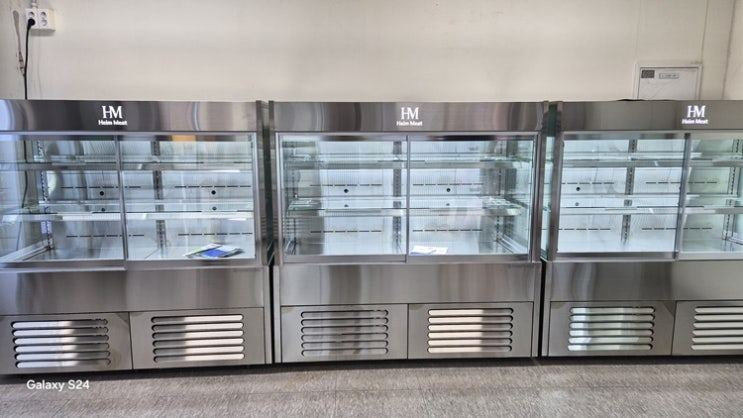
HANSUNG SHOWCASE
매장에 맞춰 만드는
업소용 쇼케이스
꽃냉장고·정육·제과·음료 쇼케이스를 매장 폭과 진열 방식에 맞춰 제작합니다. 실측부터 설치, A/S까지.
- 01전국 240여 개 A/S 전담 센터
설치한 뒤에도 가까운 센터에서 점검과 수리를 받습니다.
- 02쇼케이스 전문 디자이너 상주
매장 인테리어와 동선에 맞춰 도면부터 그립니다.
- 03본사 대량 자재 매입
자재를 본사에서 직접 들여 품질 대비 가격을 맞춥니다.
- 04유럽제·삼성 냉각 콤프
쇼케이스 수명을 정하는 콤프레셔부터 고릅니다.
제품별 제작 사례
쇼케이스 가이드
-
 꽃냉장고꽃냉장고 소음, 소리 종류로 찾는 원인과 점검 순서꽃냉장고 소음은 웅웅거림·덜컹거림·물 흐르는 소리처럼 소리 종류에 따라 원인이 다릅니다. 꽃집 사장님이 직접…읽기
꽃냉장고꽃냉장고 소음, 소리 종류로 찾는 원인과 점검 순서꽃냉장고 소음은 웅웅거림·덜컹거림·물 흐르는 소리처럼 소리 종류에 따라 원인이 다릅니다. 꽃집 사장님이 직접…읽기 -
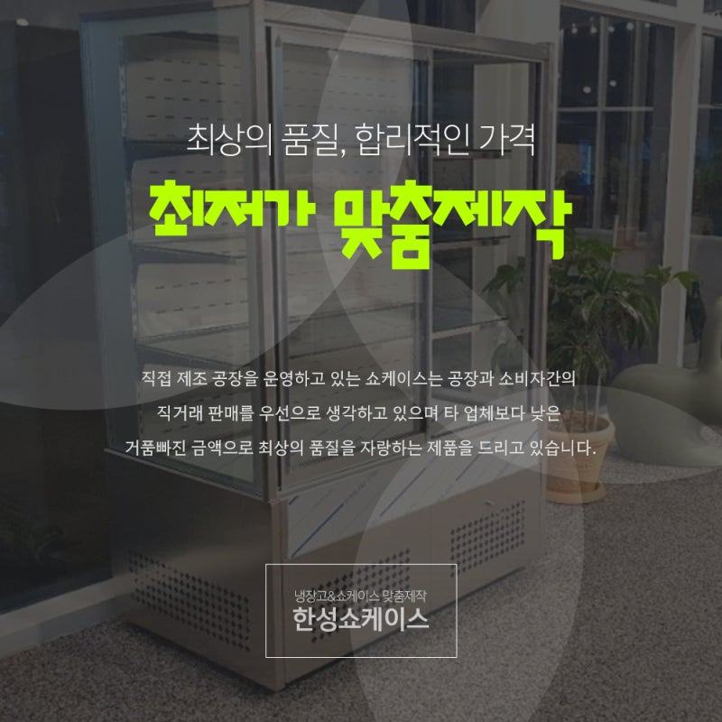
한성제품냉장쇼케이스 고르는법, 견적 비교 전에 볼 다섯 가지냉장쇼케이스 고르는법은 가격표보다 진열 상품, 냉기 흐름, 단 높이, 조명, A/S 체계를 먼저 보는 것입니…읽기 -
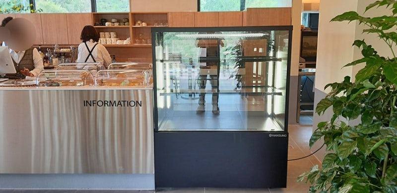
제과쇼케이스제과쇼케이스 소음이 커졌을 때, 카페·베이커리 점검 순서제과쇼케이스 소음은 오븐 열기, 카운터 안 통풍, 밀가루 먼지처럼 베이커리 환경에서 생기는 경우가 많습니다.…읽기 -
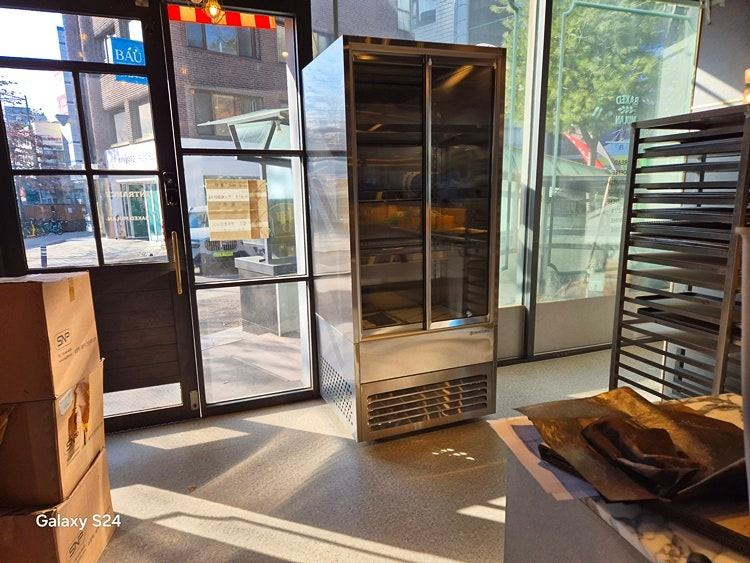
와인(음료)쇼케이스업소용음료수냉장고 중고, 이런 매물은 거르세요업소용음료수냉장고 중고는 유리문 상태, 선반 처짐, 콤프레서 사양, 잔여 보증과 부품 수급을 보면 걸러낼 매…읽기 -
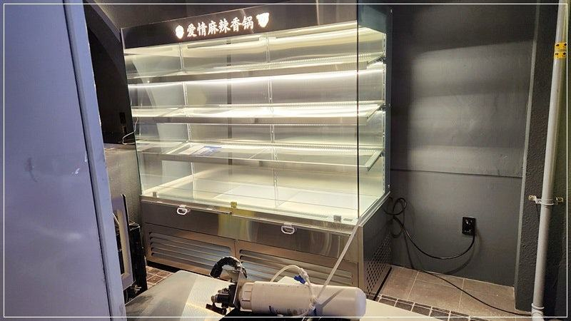
오픈쇼케이스샐러드가게 냉장고, 가정용과 업소용 오픈쇼케이스는 무엇이 다를까샐러드가게 냉장고는 재료 보관용과 손님이 직접 집어 가는 진열용을 나눠 생각해야 합니다. 일반 냉장고와 업소…읽기 -
 정육쇼케이스정육숙성고 창업, 설비 계획 짤 때 먼저 정할 네 가지정육숙성고 창업은 숙성고를 보관 장비로 쓸지, 손님에게 보여 주는 진열 장비로 쓸지부터 정해야 합니다. 위치…읽기
정육쇼케이스정육숙성고 창업, 설비 계획 짤 때 먼저 정할 네 가지정육숙성고 창업은 숙성고를 보관 장비로 쓸지, 손님에게 보여 주는 진열 장비로 쓸지부터 정해야 합니다. 위치…읽기 -
 과일진열쇼케이스과일쇼케이스 고르는법, 비교할 때 놓치기 쉬운 부분과일쇼케이스 고르는법은 과일 종류별 습도와 냉기, 선반 기울기와 소재, 과일 색을 살리는 조명, 매장 동선에…읽기
과일진열쇼케이스과일쇼케이스 고르는법, 비교할 때 놓치기 쉬운 부분과일쇼케이스 고르는법은 과일 종류별 습도와 냉기, 선반 기울기와 소재, 과일 색을 살리는 조명, 매장 동선에…읽기 -
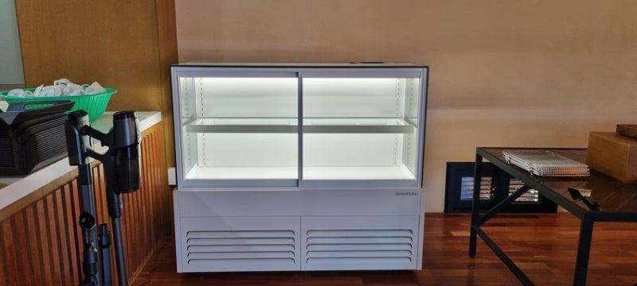
반찬(진열)쇼케이스반찬쇼케이스 결로·김서림, 반찬가게에서 생기는 원인과 해결반찬쇼케이스 결로는 갓 만든 반찬의 열기, 뚜껑 없는 국물 반찬, 잦은 문 여닫음, 습한 매장 환경에서 주로…읽기 -
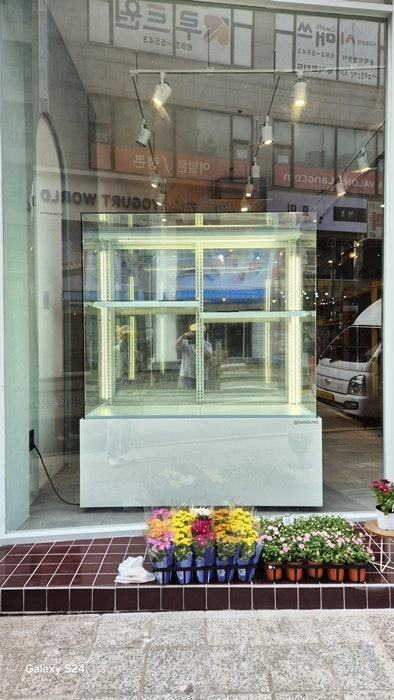
꽃냉장고꽃냉장고 디자인, 꽃집 인테리어와 어울리게 고르는 기준꽃냉장고 디자인은 유리 프레임 두께, 외관 색과 소재, 조명 색온도, 선반 높이, 뒷면 구성을 매장 인테리어…읽기 -
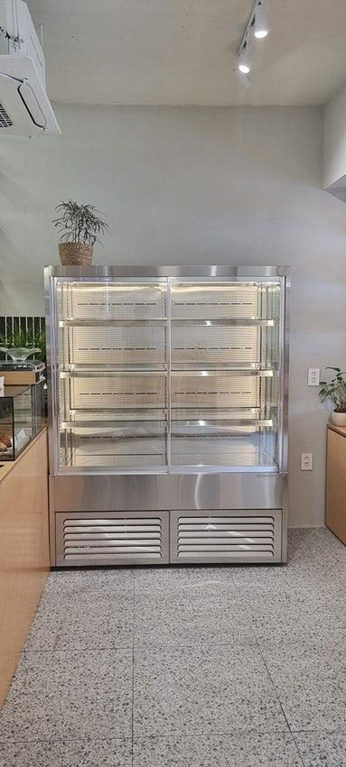
한성제품미니쇼케이스 관리, 카운터 위 작은 쇼케이스 오래 쓰는 법미니쇼케이스 관리는 열이 빠질 자리 확보, 사방 유리 닦기, 문 여닫는 습관, 기계실 먼지 청소가 핵심입니다…읽기 -
 제과쇼케이스제과쇼케이스 디자인, 베이커리 인테리어와 맞추는 유리·색·마감제과쇼케이스 디자인은 유리 형태(곡면·사각), 문 방향, 프레임 색과 상판 마감, 조명 톤을 매장 콘셉트와 …읽기
제과쇼케이스제과쇼케이스 디자인, 베이커리 인테리어와 맞추는 유리·색·마감제과쇼케이스 디자인은 유리 형태(곡면·사각), 문 방향, 프레임 색과 상판 마감, 조명 톤을 매장 콘셉트와 …읽기 -
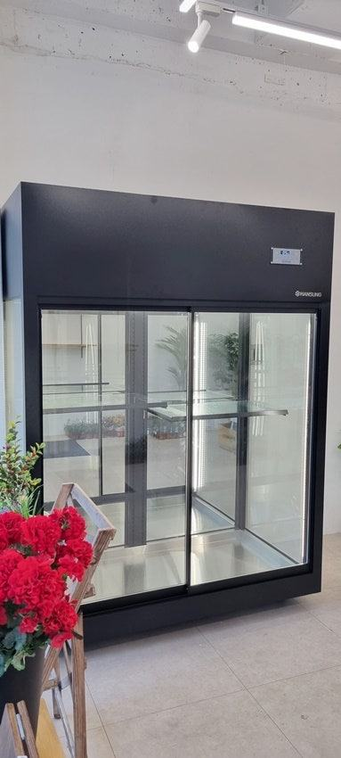
와인(음료)쇼케이스와인바 창업 준비물, 냉장 설비부터 정리하는 체크리스트와인바 창업 준비물 중 냉장 설비는 와인쇼케이스, 맥주·음료 냉장고, 안주 재료용 테이블 냉장고로 나눠 계획…읽기 -
 오픈쇼케이스오픈쇼케이스 온도, 설정값보다 선반 앞쪽을 보세요오픈쇼케이스 온도는 진열 상품에 맞춰 정하되, 컨트롤러 표시값보다 선반 앞쪽 실제 온도를 기준으로 관리해야 …읽기
오픈쇼케이스오픈쇼케이스 온도, 설정값보다 선반 앞쪽을 보세요오픈쇼케이스 온도는 진열 상품에 맞춰 정하되, 컨트롤러 표시값보다 선반 앞쪽 실제 온도를 기준으로 관리해야 …읽기 -
 정육쇼케이스정육쇼케이스 배송, 반입 전에 재 둬야 할 곳과 설치 당일 준비정육쇼케이스 배송은 출입문·복도·엘리베이터 치수, 설치 자리 바닥과 전기, 배수 위치를 미리 확인해야 당일에…읽기
정육쇼케이스정육쇼케이스 배송, 반입 전에 재 둬야 할 곳과 설치 당일 준비정육쇼케이스 배송은 출입문·복도·엘리베이터 치수, 설치 자리 바닥과 전기, 배수 위치를 미리 확인해야 당일에…읽기 -
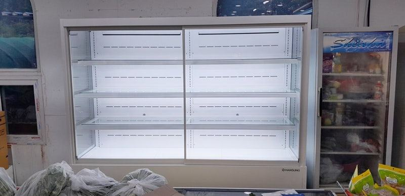
과일진열쇼케이스야채쇼케이스 관리, 매일·매주 해 두면 좋은 루틴야채쇼케이스 관리는 흙과 잎 부스러기 정리, 배수구 막힘 방지, 에어커튼 확인, 선반 세척을 매일·매주로 나…읽기 -
 반찬(진열)쇼케이스반찬쇼케이스 간냉식 직냉식, 반찬 종류와 판매 방식으로 고르기반찬쇼케이스 간냉식 직냉식 선택은 반찬이 마르기 쉬운지, 문을 얼마나 자주 여닫는지, 김치처럼 오래 두는 품…읽기
반찬(진열)쇼케이스반찬쇼케이스 간냉식 직냉식, 반찬 종류와 판매 방식으로 고르기반찬쇼케이스 간냉식 직냉식 선택은 반찬이 마르기 쉬운지, 문을 얼마나 자주 여닫는지, 김치처럼 오래 두는 품…읽기 -
꽃냉장고꽃냉장고 배치, 손님 동선과 작업 동선을 함께 잡는 위치꽃냉장고 배치는 손님이 들어와 처음 보는 자리, 플로리스트 작업대와의 거리, 햇빛과 냉난방 바람, 기계실 열…읽기
-
 한성제품냉장쇼케이스 업체, 견적서만 보지 말고 확인할 여섯 가지냉장쇼케이스 업체를 비교할 때는 직접 제조 여부, 현장 실측, 옵션 선택 범위, 실물 샘플, 직접 시공, A…읽기
한성제품냉장쇼케이스 업체, 견적서만 보지 말고 확인할 여섯 가지냉장쇼케이스 업체를 비교할 때는 직접 제조 여부, 현장 실측, 옵션 선택 범위, 실물 샘플, 직접 시공, A…읽기 -
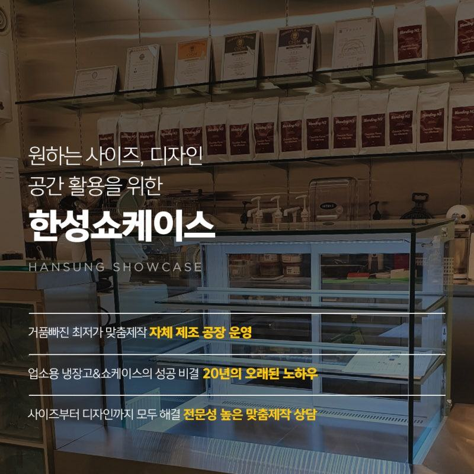
제과쇼케이스카페쇼케이스 배치, 주문 줄과 카운터 사이에서 정하는 위치카페쇼케이스 배치는 손님이 주문을 기다리며 서는 줄, 카운터와 포스 위치, 직원의 꺼내는 동선, 커피 머신 …읽기 -
 와인(음료)쇼케이스업소용음료수냉장고 맞춤제작, 상담부터 설치까지 진행 순서업소용음료수냉장고 맞춤제작은 판매 음료 확인, 벽면 실측, 문 방식과 선반 간격 결정, 외관·조명 선택, 제…읽기
와인(음료)쇼케이스업소용음료수냉장고 맞춤제작, 상담부터 설치까지 진행 순서업소용음료수냉장고 맞춤제작은 판매 음료 확인, 벽면 실측, 문 방식과 선반 간격 결정, 외관·조명 선택, 제…읽기 -
 오픈쇼케이스샐러드가게 쇼케이스 배치, 점심 피크에 줄이 꼬이지 않는 동선샐러드가게 쇼케이스 배치는 입구에서 쇼케이스, 계산대, 출구로 이어지는 한 방향 동선과 배달 픽업 동선을 나…읽기
오픈쇼케이스샐러드가게 쇼케이스 배치, 점심 피크에 줄이 꼬이지 않는 동선샐러드가게 쇼케이스 배치는 입구에서 쇼케이스, 계산대, 출구로 이어지는 한 방향 동선과 배달 픽업 동선을 나…읽기 -
 정육쇼케이스정육쇼케이스 보증, 계약 전에 확인할 무상 A/S 범위와 조건정육쇼케이스 보증은 기간보다 시작 시점, 포함 범위, 제외 조건, 누가 와서 고치는지가 더 중요합니다. 계약…읽기
정육쇼케이스정육쇼케이스 보증, 계약 전에 확인할 무상 A/S 범위와 조건정육쇼케이스 보증은 기간보다 시작 시점, 포함 범위, 제외 조건, 누가 와서 고치는지가 더 중요합니다. 계약…읽기 -
 과일진열쇼케이스과일쇼케이스 업체 고를 때, 청과 매장을 아는 곳인지 보는 법과일쇼케이스 업체는 과일의 습도·냉기 조건을 이해하는지, 경사 선반과 평대 제작 경험이 있는지, 실제 과일로…읽기
과일진열쇼케이스과일쇼케이스 업체 고를 때, 청과 매장을 아는 곳인지 보는 법과일쇼케이스 업체는 과일의 습도·냉기 조건을 이해하는지, 경사 선반과 평대 제작 경험이 있는지, 실제 과일로…읽기 -
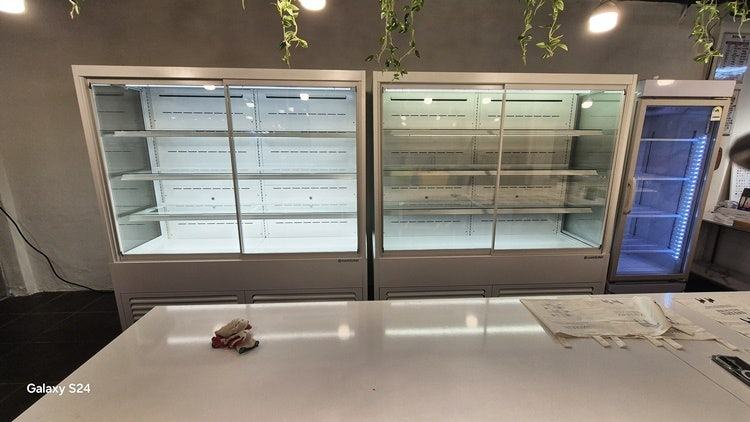
반찬(진열)쇼케이스반찬쇼케이스 견적, 정확하게 받으려면 미리 준비할 정보반찬쇼케이스 견적은 설치 자리 치수, 반찬 가짓수와 용기 규격, 판매 방식, 냉각 방식과 외관 선택, 반입 …읽기 -
 꽃냉장고꽃냉장고 진열, 칸 나누기와 버킷 놓는 순서꽃냉장고 진열은 꽃 종류별 온도대로 칸을 나누고, 키 큰 꽃은 뒤·짧은 꽃은 앞으로, 완성 꽃다발과 낱개 절…읽기
꽃냉장고꽃냉장고 진열, 칸 나누기와 버킷 놓는 순서꽃냉장고 진열은 꽃 종류별 온도대로 칸을 나누고, 키 큰 꽃은 뒤·짧은 꽃은 앞으로, 완성 꽃다발과 낱개 절…읽기 -
 한성제품냉장쇼케이스 조명, 백색과 주광색 중 무엇을 고를까냉장쇼케이스 조명은 상품 색과 매장 분위기에 맞춰 백색·주광색 LED 중에서 고릅니다. 조명 위치, 프레임 …읽기
한성제품냉장쇼케이스 조명, 백색과 주광색 중 무엇을 고를까냉장쇼케이스 조명은 상품 색과 매장 분위기에 맞춰 백색·주광색 LED 중에서 고릅니다. 조명 위치, 프레임 …읽기 -
 제과쇼케이스카페쇼케이스 진열, 계산대 앞에서 손이 가는 순서카페쇼케이스 진열은 손님 시선 높이, 주문 동선, 상품 회전 순서로 정합니다. 칸별 배치 요령과 진열을 망치…읽기
제과쇼케이스카페쇼케이스 진열, 계산대 앞에서 손이 가는 순서카페쇼케이스 진열은 손님 시선 높이, 주문 동선, 상품 회전 순서로 정합니다. 칸별 배치 요령과 진열을 망치…읽기 -
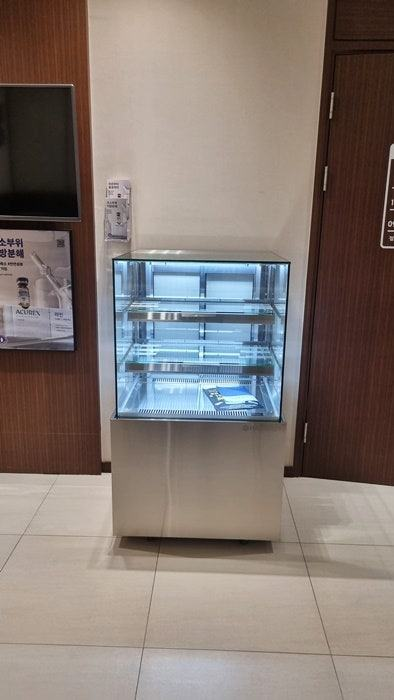
와인(음료)쇼케이스와인바 인테리어, 와인쇼케이스 자리부터 잡아야 하는 이유와인바 인테리어는 와인쇼케이스 위치와 크기를 먼저 정해야 벽, 조명, 바 테이블이 자연스럽게 맞춰집니다. 설…읽기 -
오픈쇼케이스냉장평대 전기세, 위가 열린 구조라서 생기는 새는 곳냉장평대 전기세는 설정 온도, 주변 열기, 윗면 개방 시간, 냉각 방식에서 갈립니다. 영업 중과 마감 후에 …읽기
-
 정육쇼케이스정육쇼케이스 가격, 견적서에서 금액을 가르는 항목들정육쇼케이스 가격은 길이, 냉각 방식, 유리 형태, 조명, 저울대 같은 옵션에서 차이가 납니다. 견적을 비교…읽기
정육쇼케이스정육쇼케이스 가격, 견적서에서 금액을 가르는 항목들정육쇼케이스 가격은 길이, 냉각 방식, 유리 형태, 조명, 저울대 같은 옵션에서 차이가 납니다. 견적을 비교…읽기 -
 과일진열쇼케이스과일쇼케이스 조명, 껍질 색과 윤기를 살리는 빛 고르기과일쇼케이스 조명은 과일 껍질 색을 왜곡하지 않는 색온도, 그림자를 줄이는 위치, 표면을 마르게 하지 않는 …읽기
과일진열쇼케이스과일쇼케이스 조명, 껍질 색과 윤기를 살리는 빛 고르기과일쇼케이스 조명은 과일 껍질 색을 왜곡하지 않는 색온도, 그림자를 줄이는 위치, 표면을 마르게 하지 않는 …읽기 -
 반찬(진열)쇼케이스반찬쇼케이스 설치 전에 전기·배수·열 배출부터 확인하세요반찬쇼케이스 설치는 전용 전원, 물 빠지는 길, 뒤쪽 열 배출 공간, 반입 경로를 먼저 확인해야 당일에 막힘…읽기
반찬(진열)쇼케이스반찬쇼케이스 설치 전에 전기·배수·열 배출부터 확인하세요반찬쇼케이스 설치는 전용 전원, 물 빠지는 길, 뒤쪽 열 배출 공간, 반입 경로를 먼저 확인해야 당일에 막힘…읽기 -
 꽃냉장고꽃냉장고 냉동겸용, 한 대로 쓰기 전에 알아야 할 온도 차이꽃냉장고를 냉동겸용으로 쓰려는 사장님께, 생화 보관 온도와 냉동 온도가 왜 한 칸에서 함께 갈 수 없는지와 …읽기
꽃냉장고꽃냉장고 냉동겸용, 한 대로 쓰기 전에 알아야 할 온도 차이꽃냉장고를 냉동겸용으로 쓰려는 사장님께, 생화 보관 온도와 냉동 온도가 왜 한 칸에서 함께 갈 수 없는지와 …읽기 -
한성제품미니쇼케이스 결로, 작은 유리장에 김이 서리는 이유와 대처미니쇼케이스 결로는 실내 습도, 주변 열기, 잦은 문 개폐, 꽉 찬 진열에서 생깁니다. 카운터 위 소형 쇼케…읽기
-
 제과쇼케이스제과쇼케이스 냉동겸용, 아이스 디저트를 함께 팔 때 고르는 법제과쇼케이스 냉동겸용은 아이스크림 케이크나 젤라토처럼 냉동 디저트를 함께 팔 때 검토합니다. 냉장·냉동 구역…읽기
제과쇼케이스제과쇼케이스 냉동겸용, 아이스 디저트를 함께 팔 때 고르는 법제과쇼케이스 냉동겸용은 아이스크림 케이크나 젤라토처럼 냉동 디저트를 함께 팔 때 검토합니다. 냉장·냉동 구역…읽기 -
 와인(음료)쇼케이스업소용음료수냉장고 추천, 매장 유형별로 먼저 볼 것업소용음료수냉장고는 손님이 직접 꺼내는지, 직원이 꺼내 주는지에 따라 문 방식과 냉각, 조명, 색상이 달라집…읽기
와인(음료)쇼케이스업소용음료수냉장고 추천, 매장 유형별로 먼저 볼 것업소용음료수냉장고는 손님이 직접 꺼내는지, 직원이 꺼내 주는지에 따라 문 방식과 냉각, 조명, 색상이 달라집…읽기 -
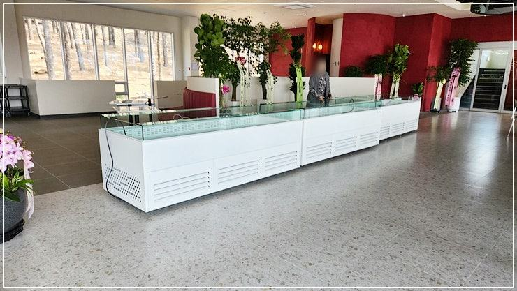
오픈쇼케이스샐러드가게 오픈 체크리스트, 냉장 설비부터 순서대로샐러드가게 오픈 전에 확인할 냉장 설비 체크리스트입니다. 오픈쇼케이스 크기와 위치, 재료 보관 냉장고, 전기…읽기 -
 정육쇼케이스정육점 창업비용, 냉장 설비에서 줄여도 되는 곳과 안 되는 곳정육점 창업비용 중 냉장 설비는 아낄 곳과 아끼면 안 되는 곳이 분명합니다. 정육쇼케이스, 보관 냉장고, 작…읽기
정육쇼케이스정육점 창업비용, 냉장 설비에서 줄여도 되는 곳과 안 되는 곳정육점 창업비용 중 냉장 설비는 아낄 곳과 아끼면 안 되는 곳이 분명합니다. 정육쇼케이스, 보관 냉장고, 작…읽기 -
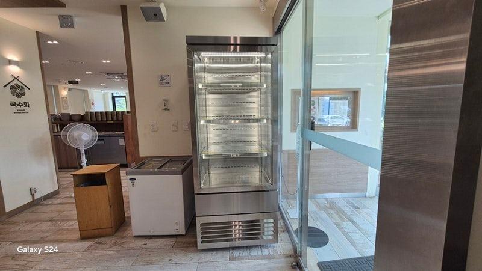
과일진열쇼케이스과일쇼케이스 결로, 과일이 내뿜는 수분까지 생각해야 줄어듭니다과일쇼케이스 결로는 바깥 습기뿐 아니라 과일이 호흡하며 내는 수분, 씻은 과일과 포장 안쪽 습기에서도 생깁니…읽기 -
 반찬(진열)쇼케이스반찬쇼케이스 수명, 오래 쓰는 매장이 지키는 습관반찬쇼케이스 수명은 처음 고를 때의 크기·구성과 매일의 관리 습관에서 갈립니다. 콤프레셔 먼지, 적재량, 국…읽기
반찬(진열)쇼케이스반찬쇼케이스 수명, 오래 쓰는 매장이 지키는 습관반찬쇼케이스 수명은 처음 고를 때의 크기·구성과 매일의 관리 습관에서 갈립니다. 콤프레셔 먼지, 적재량, 국…읽기 -
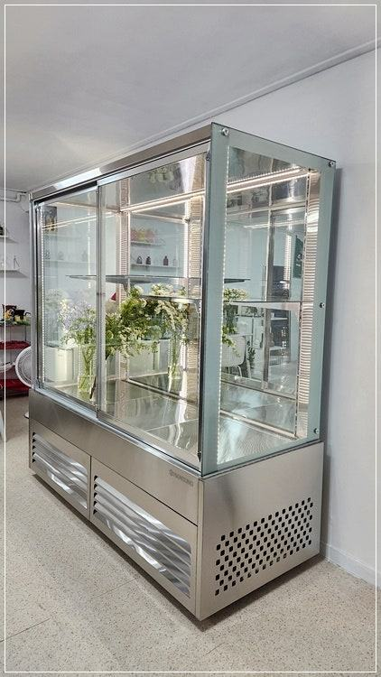
꽃냉장고꽃냉장고 도어, 여닫이와 슬라이딩 중 우리 꽃집에 맞는 쪽꽃냉장고 도어는 꽃 양동이를 넣고 빼는 동선, 문을 여는 횟수, 매장 통로 폭에 따라 여닫이와 슬라이딩, 앞…읽기 -
한성제품냉장쇼케이스 간냉식 직냉식, 고른 뒤 달라지는 관리법냉장쇼케이스 간냉식과 직냉식은 냉기를 만드는 원리가 달라 성에, 수분, 소음, 관리 방법이 달라집니다. 원리…읽기
-
제과쇼케이스제과쇼케이스 도어, 앞문형·뒷문형·양문형 무엇이 맞을까제과쇼케이스 도어는 손님이 직접 꺼내는지, 직원이 집게로 담아 주는지에 따라 앞문형, 뒷문형, 양문형으로 나…읽기
-
 와인(음료)쇼케이스와인바 냉장고, 일반 업소용 냉장고로 버티면 생기는 일와인바 냉장고는 온도 변화, 습도, 자외선, 진동을 함께 관리해야 와인 품질이 지켜집니다. 일반 냉장고와의 …읽기
와인(음료)쇼케이스와인바 냉장고, 일반 업소용 냉장고로 버티면 생기는 일와인바 냉장고는 온도 변화, 습도, 자외선, 진동을 함께 관리해야 와인 품질이 지켜집니다. 일반 냉장고와의 …읽기 -
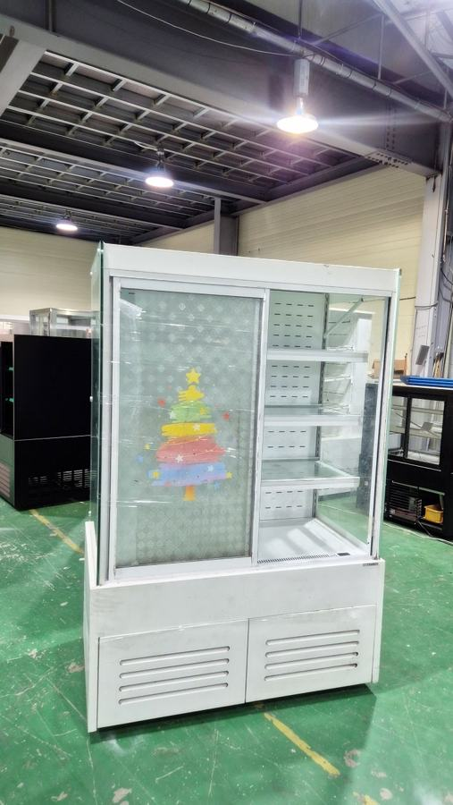
오픈쇼케이스냉장평대 고장, 증상별로 A/S 부르기 전에 볼 것냉장평대 고장은 냉기가 약해짐, 성에 과다, 바닥 물 고임, 소음, 전원 차단처럼 증상별로 먼저 볼 곳이 다…읽기 -
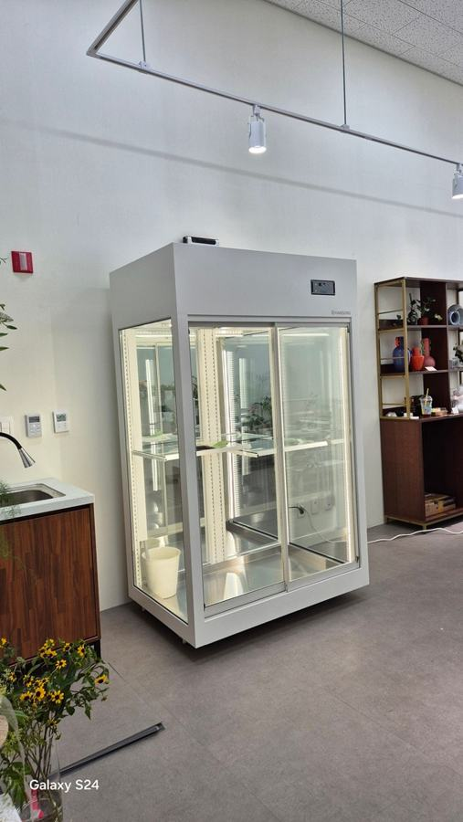
정육쇼케이스고깃집 창업 준비물, 냉장 설비는 숙성고부터 순서 정하기고깃집 창업 준비물 중 냉장 설비는 원육 보관 냉장고, 정육숙성고, 홀 반찬·음료 냉장고로 나눠 순서대로 정…읽기 -
 과일진열쇼케이스과일쇼케이스 간냉식 직냉식, 과일 수분과 진열 시야로 고르기과일쇼케이스 간냉식과 직냉식은 과일 수분 유지, 유리 시야, 성에 관리에서 차이가 납니다. 통과일·컷과일·선…읽기
과일진열쇼케이스과일쇼케이스 간냉식 직냉식, 과일 수분과 진열 시야로 고르기과일쇼케이스 간냉식과 직냉식은 과일 수분 유지, 유리 시야, 성에 관리에서 차이가 납니다. 통과일·컷과일·선…읽기 -
반찬(진열)쇼케이스반찬쇼케이스 렌탈, 계약 전에 구매와 비교해 볼 것반찬쇼케이스 렌탈은 초기 부담을 나누는 대신 크기 선택, 계약 기간, 고장 책임, 만료 후 소유권에서 조건이…읽기
-
 꽃냉장고꽃냉장고 콤프레셔, 상태를 확인하는 법과 오래 쓰는 관리꽃냉장고 콤프레셔는 눈으로 상태를 보기 어려워 소리, 온도 회복 속도, 가동 패턴으로 확인해야 합니다. 중고…읽기
꽃냉장고꽃냉장고 콤프레셔, 상태를 확인하는 법과 오래 쓰는 관리꽃냉장고 콤프레셔는 눈으로 상태를 보기 어려워 소리, 온도 회복 속도, 가동 패턴으로 확인해야 합니다. 중고…읽기 -
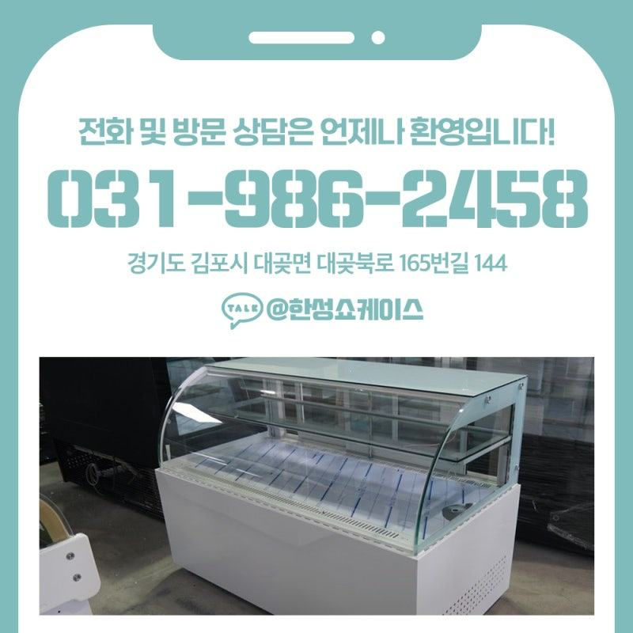
한성제품냉장쇼케이스 견적, 요청 전에 준비할 정보와 비교하는 법냉장쇼케이스 견적은 설치 자리 치수, 진열 상품, 문 방식, 냉각 방식, 조명을 미리 정리해 보내야 정확하게…읽기 -
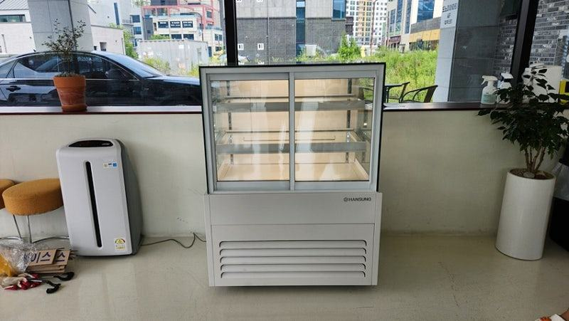
제과쇼케이스제과쇼케이스 결로, 유리에 김이 서리는 진짜 원인과 대처제과쇼케이스 결로는 매장 습도, 설치 위치, 유리 사양, 냉각 방식이 겹쳐 생깁니다. 케이크와 빵이 김에 가…읽기 -
 와인(음료)쇼케이스주류쇼케이스 여름철에 맥주가 덜 차가워지는 이유와 점검법주류쇼케이스는 여름철에 바깥 기온, 잦은 문 열림, 열 배출 막힘이 겹치며 냉기가 약해집니다. 성수기 전에 …읽기
와인(음료)쇼케이스주류쇼케이스 여름철에 맥주가 덜 차가워지는 이유와 점검법주류쇼케이스는 여름철에 바깥 기온, 잦은 문 열림, 열 배출 막힘이 겹치며 냉기가 약해집니다. 성수기 전에 …읽기 -
 오픈쇼케이스샐러드가게 창업비용, 냉장 설비에서 아끼면 손해 보는 항목샐러드가게 창업비용 중 냉장 설비는 한 번 정하면 바꾸기 어렵습니다. 오픈쇼케이스 규격, 냉기 유지, 조명과…읽기
오픈쇼케이스샐러드가게 창업비용, 냉장 설비에서 아끼면 손해 보는 항목샐러드가게 창업비용 중 냉장 설비는 한 번 정하면 바꾸기 어렵습니다. 오픈쇼케이스 규격, 냉기 유지, 조명과…읽기 -
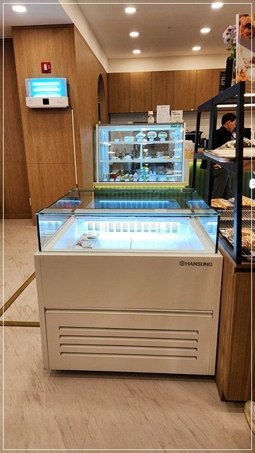
정육쇼케이스정육쇼케이스 배치, 자리 하나로 달라지는 손님과 작업 동선정육쇼케이스 배치는 출입구에서 보이는 각도, 손질대와 저울까지의 거리, 고기를 채우는 뒤쪽 통로를 함께 정해…읽기 -
 과일진열쇼케이스과일가게 오픈 체크리스트, 설비 들이기 전 꼭 볼 항목과일가게 오픈 체크리스트에서 과일쇼케이스는 문 방식, 습도 관리, 진열 높이, 설치 자리를 먼저 정해야 합니…읽기
과일진열쇼케이스과일가게 오픈 체크리스트, 설비 들이기 전 꼭 볼 항목과일가게 오픈 체크리스트에서 과일쇼케이스는 문 방식, 습도 관리, 진열 높이, 설치 자리를 먼저 정해야 합니…읽기 -
 반찬(진열)쇼케이스반찬가게 전기요금, 반찬쇼케이스에서 새는 전기 잡는 법반찬가게 전기요금은 반찬쇼케이스의 설정 온도, 김서림 방지 장치 사용, 설치 자리, 문 여닫는 습관에서 크게…읽기
반찬(진열)쇼케이스반찬가게 전기요금, 반찬쇼케이스에서 새는 전기 잡는 법반찬가게 전기요금은 반찬쇼케이스의 설정 온도, 김서림 방지 장치 사용, 설치 자리, 문 여닫는 습관에서 크게…읽기 -
 꽃냉장고꽃냉장고 결로, 생화는 촉촉하게 유리는 맑게 두는 법꽃냉장고 결로는 꽃이 내뿜는 수분과 물통, 바람 방향, 배수 상태가 겹쳐 생깁니다. 습도는 지키면서 유리 김…읽기
꽃냉장고꽃냉장고 결로, 생화는 촉촉하게 유리는 맑게 두는 법꽃냉장고 결로는 꽃이 내뿜는 수분과 물통, 바람 방향, 배수 상태가 겹쳐 생깁니다. 습도는 지키면서 유리 김…읽기 -
 쇼케이스 이용 및 관리미니쇼케이스 대형쇼케이스 차이, 매장 크기보다 먼저 볼 것미니쇼케이스와 대형쇼케이스의 차이는 크기보다 하루 판매량, 진열 품목 수, 설치 자리, 냉기 회복력에서 갈립…읽기
쇼케이스 이용 및 관리미니쇼케이스 대형쇼케이스 차이, 매장 크기보다 먼저 볼 것미니쇼케이스와 대형쇼케이스의 차이는 크기보다 하루 판매량, 진열 품목 수, 설치 자리, 냉기 회복력에서 갈립…읽기 -
 한성제품냉장쇼케이스 고장, 증상별로 먼저 확인할 것과 수리 판단냉장쇼케이스 고장은 온도가 안 내려감, 성에·결로, 소음, 조명 꺼짐처럼 증상마다 먼저 볼 곳이 다릅니다. …읽기
한성제품냉장쇼케이스 고장, 증상별로 먼저 확인할 것과 수리 판단냉장쇼케이스 고장은 온도가 안 내려감, 성에·결로, 소음, 조명 꺼짐처럼 증상마다 먼저 볼 곳이 다릅니다. …읽기 -
 제과쇼케이스제과쇼케이스 간냉식 직냉식, 케이크·빵 매장에 맞는 선택제과쇼케이스 간냉식과 직냉식은 성에, 온도 균일성, 수분 손실, 관리 방식이 다릅니다. 케이크·생크림·구움과…읽기
제과쇼케이스제과쇼케이스 간냉식 직냉식, 케이크·빵 매장에 맞는 선택제과쇼케이스 간냉식과 직냉식은 성에, 온도 균일성, 수분 손실, 관리 방식이 다릅니다. 케이크·생크림·구움과…읽기 -
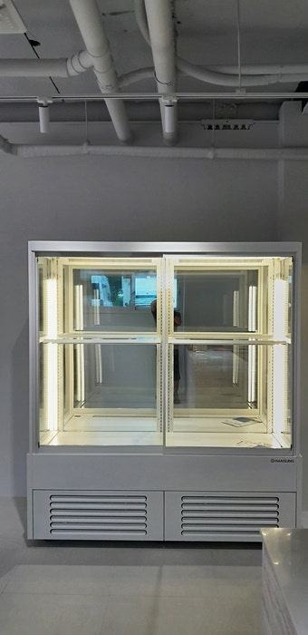
와인(음료)쇼케이스업소용음료수냉장고 창업 준비, 고르는 순서부터 정리업소용음료수냉장고는 창업 때 무엇을 진열할지, 어디에 둘지, 손님이 직접 꺼내는지를 먼저 정해야 용량과 문 …읽기 -
 오픈쇼케이스오픈쇼케이스 중고 매물, 거르는 기준과 살 때 확인할 곳오픈쇼케이스 중고는 문이 없는 구조라 에어커튼, 앞쪽 온도, 녹과 부식, 나이트커버 유무를 꼭 봐야 합니다.…읽기
오픈쇼케이스오픈쇼케이스 중고 매물, 거르는 기준과 살 때 확인할 곳오픈쇼케이스 중고는 문이 없는 구조라 에어커튼, 앞쪽 온도, 녹과 부식, 나이트커버 유무를 꼭 봐야 합니다.…읽기 -
 정육쇼케이스정육쇼케이스 진열, 칸 나누기와 부위별 놓는 순서정육쇼케이스 진열은 부위별 칸 나누기, 손님 시선 순서, 냉기 흐름, 조명 색을 함께 맞춰야 고기 색이 오래…읽기
정육쇼케이스정육쇼케이스 진열, 칸 나누기와 부위별 놓는 순서정육쇼케이스 진열은 부위별 칸 나누기, 손님 시선 순서, 냉기 흐름, 조명 색을 함께 맞춰야 고기 색이 오래…읽기 -
 과일진열쇼케이스과일쇼케이스 고장, 과일 매장에서 유독 자주 생기는 증상과 대처과일쇼케이스 고장은 박스 적재로 막힌 바람길, 과일 부스러기로 막힌 배수, 에바 성에, 가스 부족처럼 과일 …읽기
과일진열쇼케이스과일쇼케이스 고장, 과일 매장에서 유독 자주 생기는 증상과 대처과일쇼케이스 고장은 박스 적재로 막힌 바람길, 과일 부스러기로 막힌 배수, 에바 성에, 가스 부족처럼 과일 …읽기 -
 반찬(진열)쇼케이스반찬쇼케이스 사이즈, 반찬 가짓수와 용기로 길이 정하는 법반찬쇼케이스 사이즈는 매장 벽 길이보다 진열할 반찬 가짓수, 용기 크기, 단 수, 손님이 서는 통로 폭으로 …읽기
반찬(진열)쇼케이스반찬쇼케이스 사이즈, 반찬 가짓수와 용기로 길이 정하는 법반찬쇼케이스 사이즈는 매장 벽 길이보다 진열할 반찬 가짓수, 용기 크기, 단 수, 손님이 서는 통로 폭으로 …읽기 -
 꽃냉장고꽃냉장고 간냉식 직냉식, 냉각 방식에 따라 달라지는 꽃 관리꽃냉장고 간냉식과 직냉식은 바람 세기, 습도 유지, 성에, 온도 균일성에서 차이가 납니다. 생화 매장에 맞는…읽기
꽃냉장고꽃냉장고 간냉식 직냉식, 냉각 방식에 따라 달라지는 꽃 관리꽃냉장고 간냉식과 직냉식은 바람 세기, 습도 유지, 성에, 온도 균일성에서 차이가 납니다. 생화 매장에 맞는…읽기 -
 쇼케이스 이용 및 관리주류회사지원냉장고 구매냉장고 차이, 계약 전에 따져 볼 것주류회사지원냉장고와 직접 구매한 냉장고는 소유권, 진열 조건, 크기 선택, 고장 시 대응 방식이 다릅니다. …읽기
쇼케이스 이용 및 관리주류회사지원냉장고 구매냉장고 차이, 계약 전에 따져 볼 것주류회사지원냉장고와 직접 구매한 냉장고는 소유권, 진열 조건, 크기 선택, 고장 시 대응 방식이 다릅니다. …읽기 -
한성제품편의점 폐기 줄이는 법, 쇼케이스 온도와 진열 순서부터편의점 폐기 줄이는 법은 발주량 조절과 함께 마트쇼케이스의 실제 온도, 선입선출 진열, 냉기 흐름, 온장 상…읽기
-
 제과쇼케이스제과쇼케이스 견적, 상담 전에 준비하면 빨라지는 정보제과쇼케이스 견적은 설치 자리 치수, 진열할 빵과 케이크 종류, 문 방향, 조명 색, 반입 경로를 미리 정리…읽기
제과쇼케이스제과쇼케이스 견적, 상담 전에 준비하면 빨라지는 정보제과쇼케이스 견적은 설치 자리 치수, 진열할 빵과 케이크 종류, 문 방향, 조명 색, 반입 경로를 미리 정리…읽기 -
 와인(음료)쇼케이스업소용음료수냉장고 배송 전에 들어갈 길부터 확인하세요업소용음료수냉장고 배송은 출입문 폭, 계단과 엘리베이터, 차량 정차 위치, 설치 자리의 수평과 콘센트를 미리…읽기
와인(음료)쇼케이스업소용음료수냉장고 배송 전에 들어갈 길부터 확인하세요업소용음료수냉장고 배송은 출입문 폭, 계단과 엘리베이터, 차량 정차 위치, 설치 자리의 수평과 콘센트를 미리…읽기 -
오픈쇼케이스샐러드가게 창업 준비물, 냉장 설비만 따로 뽑은 체크리스트샐러드가게 창업 준비물 중 냉장 설비는 진열용 오픈쇼케이스, 토핑을 담는 작업대 냉장고, 재료 보관 냉장고,…읽기
-
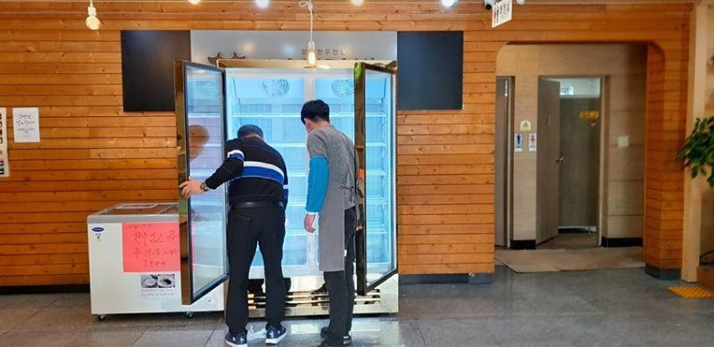
정육쇼케이스정육쇼케이스 냉동겸용, 한 대로 냉장·냉동을 나눌 때 확인할 것정육쇼케이스 냉동겸용은 칸을 냉장과 냉동으로 나누거나 온도 전환이 되는 구조입니다. 구획 방식, 결로와 성에…읽기 -
 과일진열쇼케이스과일가게 폐기 줄이는 법, 온도보다 먼저 볼 습도와 진열과일가게 폐기 줄이는 법은 과일쇼케이스의 온도뿐 아니라 습도, 바람 방향, 과일끼리의 배치, 입고 후 처리 …읽기
과일진열쇼케이스과일가게 폐기 줄이는 법, 온도보다 먼저 볼 습도와 진열과일가게 폐기 줄이는 법은 과일쇼케이스의 온도뿐 아니라 습도, 바람 방향, 과일끼리의 배치, 입고 후 처리 …읽기 -
 반찬(진열)쇼케이스반찬쇼케이스 고르는법, 냉기 흐름·문 방식·조명 세 가지 기준반찬쇼케이스 고르는법의 핵심은 반찬 표면이 마르지 않는 냉기 흐름, 매장 운영에 맞는 문 방식, 반찬 색이 …읽기
반찬(진열)쇼케이스반찬쇼케이스 고르는법, 냉기 흐름·문 방식·조명 세 가지 기준반찬쇼케이스 고르는법의 핵심은 반찬 표면이 마르지 않는 냉기 흐름, 매장 운영에 맞는 문 방식, 반찬 색이 …읽기 -
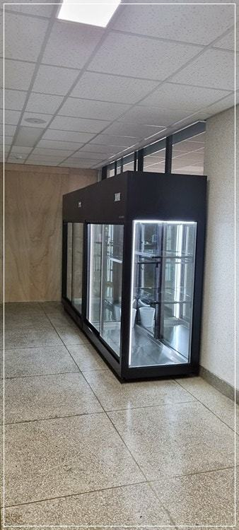
꽃냉장고꽃냉장고 견적 비교할 때 금액 말고 먼저 맞춰 볼 항목꽃냉장고 견적은 형태(상치형·벽면형), 냉각 방식과 습도 유지, 유리 사양, 문 방식, 조명, 설치 조건이 …읽기 -
 쇼케이스 이용 및 관리정육숙성고 정육쇼케이스 차이, 고기를 재우는 장비와 파는 장비정육숙성고와 정육쇼케이스 차이는 고기를 오래 두고 맛을 들이느냐, 손질한 고기를 바로 팔기 좋게 보여 주느냐…읽기
쇼케이스 이용 및 관리정육숙성고 정육쇼케이스 차이, 고기를 재우는 장비와 파는 장비정육숙성고와 정육쇼케이스 차이는 고기를 오래 두고 맛을 들이느냐, 손질한 고기를 바로 팔기 좋게 보여 주느냐…읽기 -
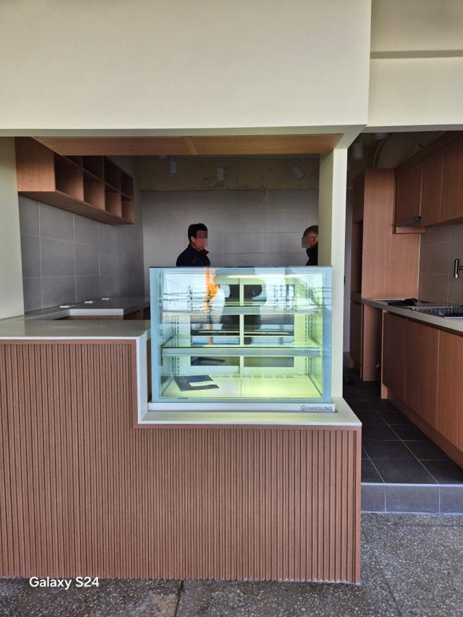
한성제품냉장쇼케이스 AS, 오래 쓴 제품은 고칠까 바꿀까냉장쇼케이스 AS를 부르기 전 직접 볼 증상, 수리로 충분한 경우와 교체를 고민해야 하는 경우, 접수할 때 …읽기 -
제과쇼케이스제과쇼케이스 설치 전에 챙길 전원·통풍·반입 경로제과쇼케이스 설치는 자리 실측, 전용 전원, 뒷면 통풍, 오븐과의 거리, 반입 경로를 미리 정해 두면 당일 …읽기
-
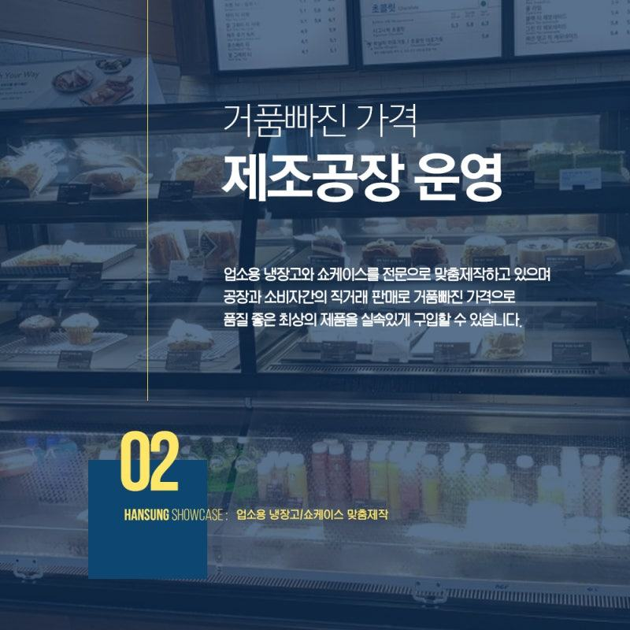
와인(음료)쇼케이스업소용음료수냉장고 보증, 계약 전에 읽어 둘 조건들업소용음료수냉장고 보증은 기간보다 범위가 중요합니다. 보증에 들어가는 부품, 방문 수리 조건, 여름철 접수 …읽기 -
오픈쇼케이스오픈쇼케이스 맞춤제작, 상담부터 설치까지 이렇게 진행됩니다오픈쇼케이스 맞춤제작은 진열 상품과 동선을 정하는 상담, 도면 확인, 공장 제작, 반입·설치 순으로 진행됩니…읽기
-
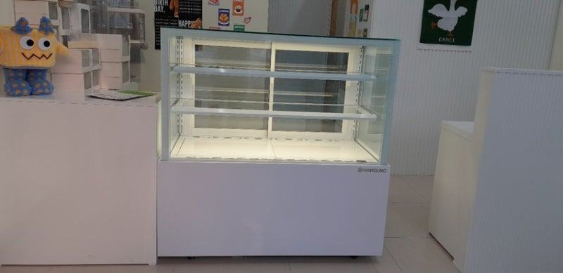
정육쇼케이스정육쇼케이스 도어, 앞문·뒷문·슬라이딩 중 우리 매장에 맞는 것정육쇼케이스 도어는 손님이 직접 꺼내는지, 직원이 썰어 내주는지에 따라 앞문·뒷문·슬라이딩이 갈립니다. 대면…읽기 -
과일진열쇼케이스과일쇼케이스 AS, 고장인지 관리 문제인지부터 가려 보세요과일쇼케이스 AS를 부르기 전에 과일이 무르거나 마르는 원인이 고장인지 습도·배치 문제인지 먼저 가려 보세요…읽기
-
반찬(진열)쇼케이스반찬쇼케이스 관리, 국물·냄새·성에까지 매일 손볼 곳반찬쇼케이스 관리는 국물 흘림과 냄새, 용기 습기, 기계실 먼지를 매일·매주 나눠 챙기는 것이 핵심입니다. …읽기
-
 꽃냉장고꽃냉장고 설치, 꽃집 안 자리 정하는 다섯 가지 기준꽃냉장고 설치 자리는 햇빛과 출입문 바람, 물통 무게와 물기, 작업대 동선, 바깥에서 보이는 방향을 함께 따…읽기
꽃냉장고꽃냉장고 설치, 꽃집 안 자리 정하는 다섯 가지 기준꽃냉장고 설치 자리는 햇빛과 출입문 바람, 물통 무게와 물기, 작업대 동선, 바깥에서 보이는 방향을 함께 따…읽기 -
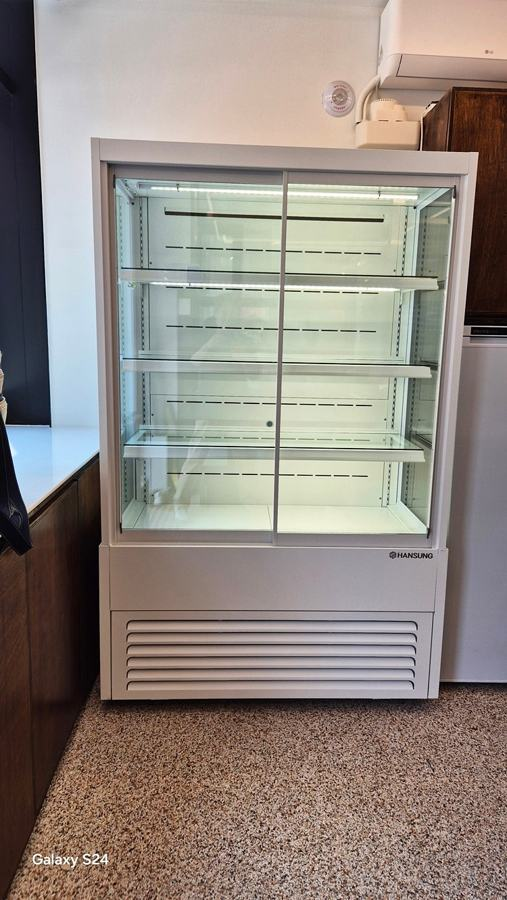
쇼케이스 이용 및 관리반찬쇼케이스 오픈쇼케이스 차이, 덜어 파는 집과 담아 파는 집반찬쇼케이스와 오픈쇼케이스 차이는 반찬을 큰 통에서 덜어 파는지, 미리 포장해 손님이 집어 가게 하는지에서 …읽기 -
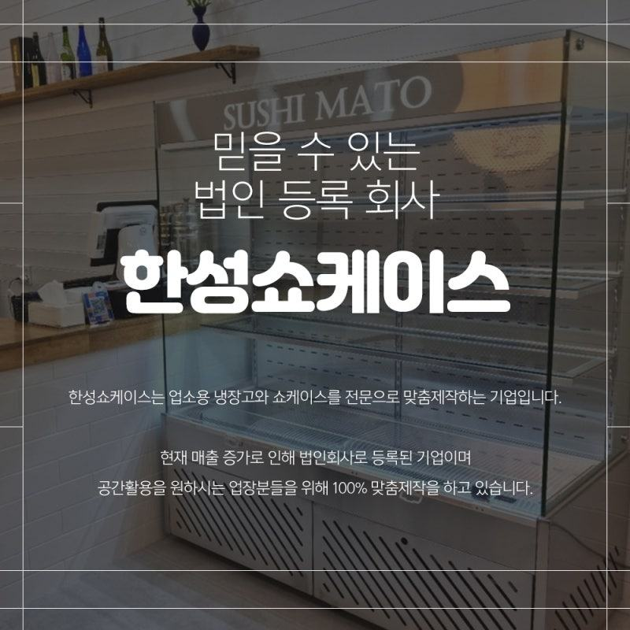
한성제품편의점 전기요금, 냉장·냉동·온장 장비별로 줄이는 법편의점 전기요금은 24시간 켜진 오픈 쇼케이스, 음료 냉장고, 아이스크림 냉동고, 겨울 온장고에서 대부분 갈…읽기 -
 제과쇼케이스제과쇼케이스 수명, 오래 쓰는 빵집이 매일 챙기는 것들제과쇼케이스 수명은 콤프레셔에 걸리는 부담, 습기와 결로, 조명 열, 오븐과의 거리에서 크게 갈립니다. 오래…읽기
제과쇼케이스제과쇼케이스 수명, 오래 쓰는 빵집이 매일 챙기는 것들제과쇼케이스 수명은 콤프레셔에 걸리는 부담, 습기와 결로, 조명 열, 오븐과의 거리에서 크게 갈립니다. 오래…읽기 -
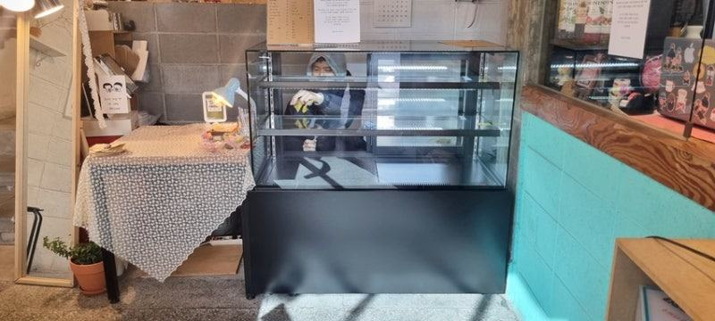
와인(음료)쇼케이스업소용음료수냉장고 가격, 같은 크기인데 견적이 다른 이유업소용음료수냉장고 가격은 도어 수, 유리 사양, 선반 구성, 앞·뒤 보충 방식, 외관 마감에서 갈립니다. 음…읽기 -
 오픈쇼케이스샐러드가게 인테리어, 오픈쇼케이스 자리부터 정해야 하는 이유샐러드가게 인테리어는 채소 색이 살아나는 조명과 테이크아웃 동선을 정해 주는 오픈쇼케이스 위치에서 시작합니다…읽기
오픈쇼케이스샐러드가게 인테리어, 오픈쇼케이스 자리부터 정해야 하는 이유샐러드가게 인테리어는 채소 색이 살아나는 조명과 테이크아웃 동선을 정해 주는 오픈쇼케이스 위치에서 시작합니다…읽기 -
 정육쇼케이스정육쇼케이스 콤프레셔, 고를 때와 쓸 때 확인할 것정육쇼케이스 콤프레셔는 고기 색과 육즙을 지키는 심장입니다. 구매 전 사양 확인법, 매장에서 소리·냉각 속도…읽기
정육쇼케이스정육쇼케이스 콤프레셔, 고를 때와 쓸 때 확인할 것정육쇼케이스 콤프레셔는 고기 색과 육즙을 지키는 심장입니다. 구매 전 사양 확인법, 매장에서 소리·냉각 속도…읽기 -
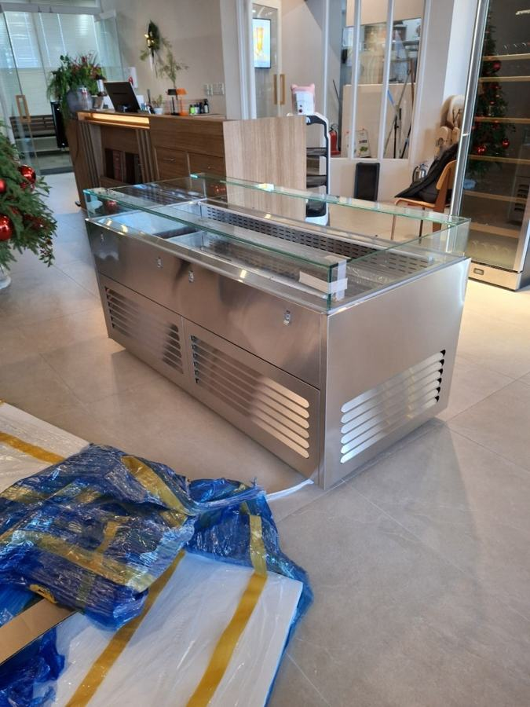
과일진열쇼케이스과일가게 전기요금, 평대·과일쇼케이스에서 새는 냉기 잡는 법과일가게 전기요금은 높게 쌓은 박스와 행사 POP가 냉기 길을 막고, 성에가 쌓여 냉각이 더뎌지는 데서 크게…읽기 -
반찬(진열)쇼케이스반찬쇼케이스 업체, 계약 전에 꼭 물어볼 여섯 가지반찬쇼케이스 업체는 직접 만드는 곳인지, 매장을 실측하고 반찬 용기 크기까지 묻는지, 콤프레셔와 A/S 체계…읽기
-
 꽃냉장고꽃냉장고 렌탈, 계약서에 사인하기 전에 따져 볼 조건꽃냉장고 렌탈은 초기 부담을 덜 수 있지만 계약 기간, 관리 범위, 중도 해지, 규격 선택의 제약을 함께 봐…읽기
꽃냉장고꽃냉장고 렌탈, 계약서에 사인하기 전에 따져 볼 조건꽃냉장고 렌탈은 초기 부담을 덜 수 있지만 계약 기간, 관리 범위, 중도 해지, 규격 선택의 제약을 함께 봐…읽기 -
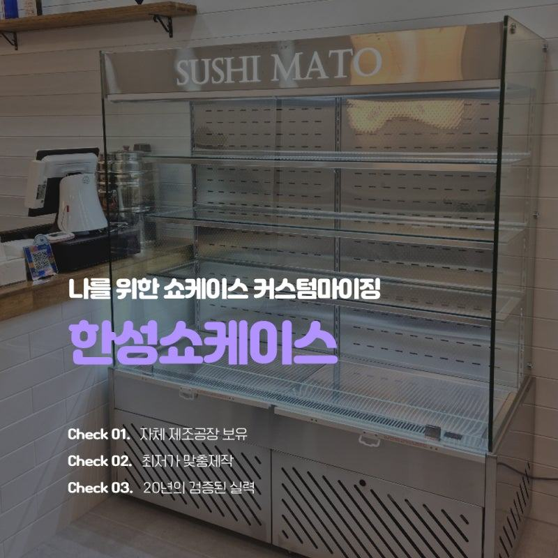
한성제품냉장쇼케이스 사이즈, 좁은 매장에서 치수 정하는 순서냉장쇼케이스 사이즈는 설치 자리 폭만 보고 정하면 통로, 문 열림, 반입 경로에서 문제가 생깁니다. 좁은 매…읽기 -
제과쇼케이스제과쇼케이스 렌탈과 구매, 빵집 운영 방식별로 고르는 법제과쇼케이스 렌탈은 팝업이나 시즌 케이크처럼 짧게 쓰는 경우에 맞고, 카운터에 매립하거나 매장 디자인에 맞춰…읽기
-
 와인(음료)쇼케이스와인바 창업비용, 와인쇼케이스에서 아끼면 안 되는 부분와인바 창업비용에서 와인쇼케이스는 재고 와인의 품질과 매장 분위기를 함께 책임지는 항목입니다. 줄여도 되는 …읽기
와인(음료)쇼케이스와인바 창업비용, 와인쇼케이스에서 아끼면 안 되는 부분와인바 창업비용에서 와인쇼케이스는 재고 와인의 품질과 매장 분위기를 함께 책임지는 항목입니다. 줄여도 되는 …읽기 -
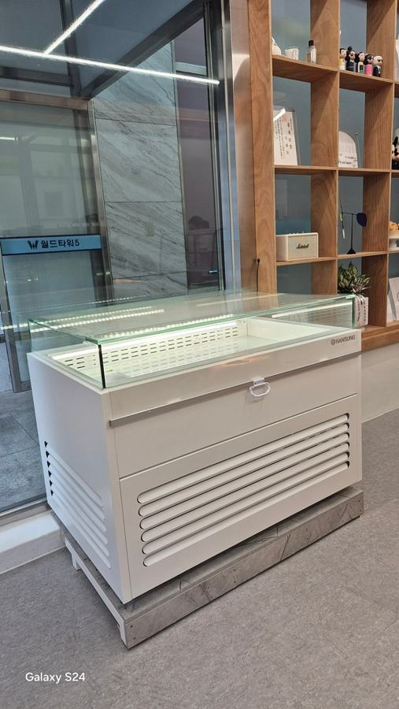
오픈쇼케이스냉장평대 추천, 메뉴와 매장 크기로 고르는 기준냉장평대 추천 기준은 진열할 메뉴의 부피, 손님 눈높이에 맞는 높이, 조명과 유리 사양, 냉각 방식입니다. …읽기 -
 정육쇼케이스정육쇼케이스 여름철, 성수기 전에 해 둘 점검과 위생 관리정육쇼케이스는 여름철 실내 온도와 문 여닫는 횟수가 함께 늘면서 냉기 부족과 위생 문제가 한꺼번에 찾아옵니다…읽기
정육쇼케이스정육쇼케이스 여름철, 성수기 전에 해 둘 점검과 위생 관리정육쇼케이스는 여름철 실내 온도와 문 여닫는 횟수가 함께 늘면서 냉기 부족과 위생 문제가 한꺼번에 찾아옵니다…읽기 -
과일진열쇼케이스과일쇼케이스 사이즈, 박스 크기와 진열 각도로 정하는 법과일쇼케이스 사이즈는 매장 폭보다 들어오는 과일 박스 크기, 계단식 진열 각도, 컵과일·통과일 비중으로 정해…읽기
-
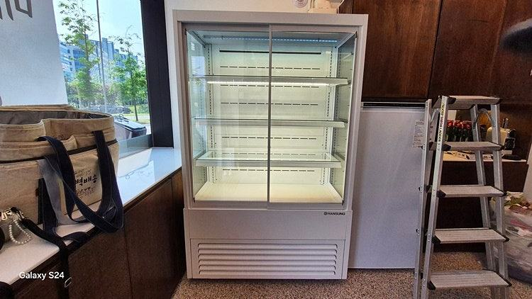
반찬(진열)쇼케이스반찬쇼케이스 조명, 김치·나물·조림 색이 달라 보이는 이유반찬쇼케이스 조명은 빛의 색과 비추는 위치, 유리 반사, 발열에 따라 같은 반찬도 신선해 보이거나 오래된 것…읽기 -
과일진열쇼케이스과일가게 인테리어, 쇼케이스 자리부터 잡아야 하는 이유과일가게 인테리어는 벽지나 간판보다 과일쇼케이스의 위치·크기·조명을 먼저 정해야 공사가 꼬이지 않습니다. 순…읽기
-
반찬(진열)쇼케이스반찬쇼케이스 온도, 설정값보다 먼저 봐야 할 것들반찬쇼케이스 온도는 숫자 하나로 끝나지 않습니다. 반찬 종류별 진열 위치, 문 여닫는 횟수, 담는 시점까지 …읽기
-
 꽃냉장고꽃냉장고 AS, 오래 쓴 제품 고칠지 바꿀지 판단하는 법꽃냉장고 AS를 부르기 전에 확인할 증상과, 수리로 버틸지 교체할지 판단하는 기준을 정리했습니다. 생화 손실…읽기
꽃냉장고꽃냉장고 AS, 오래 쓴 제품 고칠지 바꿀지 판단하는 법꽃냉장고 AS를 부르기 전에 확인할 증상과, 수리로 버틸지 교체할지 판단하는 기준을 정리했습니다. 생화 손실…읽기 -
쇼케이스 이용 및 관리와인쇼케이스 가정용와인셀러 차이, 매장에 맞는 쪽은와인쇼케이스와 가정용와인셀러는 문 여닫는 횟수, 보여 주는 방식, 매장 인테리어와의 결합에서 차이가 납니다.…읽기
-
 한성제품냉장쇼케이스 추천, 업종별로 먼저 정할 다섯 가지냉장쇼케이스 추천을 받기 전에 사장님이 먼저 정해 두면 좋은 다섯 가지를 정리했습니다. 상품 종류, 손님이 …읽기
한성제품냉장쇼케이스 추천, 업종별로 먼저 정할 다섯 가지냉장쇼케이스 추천을 받기 전에 사장님이 먼저 정해 두면 좋은 다섯 가지를 정리했습니다. 상품 종류, 손님이 …읽기 -
 제과쇼케이스제과쇼케이스 사이즈, 카운터 동선부터 재고 정하는 법제과쇼케이스 사이즈는 매장 폭보다 카운터 동선, 디저트 높이, 직원이 꺼내는 방향에서 정해집니다. 가로·깊이…읽기
제과쇼케이스제과쇼케이스 사이즈, 카운터 동선부터 재고 정하는 법제과쇼케이스 사이즈는 매장 폭보다 카운터 동선, 디저트 높이, 직원이 꺼내는 방향에서 정해집니다. 가로·깊이…읽기 -
 와인(음료)쇼케이스업소용음료수냉장고 배치, 벽면·통로·계산대 중 어디가 맞을까업소용음료수냉장고 배치는 손님이 음료를 집는 순간을 기준으로 정합니다. 벽면, 통로 측면, 계산대 옆 배치의…읽기
와인(음료)쇼케이스업소용음료수냉장고 배치, 벽면·통로·계산대 중 어디가 맞을까업소용음료수냉장고 배치는 손님이 음료를 집는 순간을 기준으로 정합니다. 벽면, 통로 측면, 계산대 옆 배치의…읽기 -
 오픈쇼케이스오픈쇼케이스 여름철 냉기가 약해질 때 먼저 볼 곳오픈쇼케이스는 여름철에 앞줄 상품부터 미지근해지기 쉽습니다. 에어커튼, 설치 위치, 응축기 먼지, 나이트커버…읽기
오픈쇼케이스오픈쇼케이스 여름철 냉기가 약해질 때 먼저 볼 곳오픈쇼케이스는 여름철에 앞줄 상품부터 미지근해지기 쉽습니다. 에어커튼, 설치 위치, 응축기 먼지, 나이트커버…읽기 -
정육쇼케이스정육쇼케이스 설치, 자리 정하기 전 확인할 다섯 가지정육쇼케이스 설치는 크기가 큰 만큼 자리, 바닥 수평, 전원, 열 배출, 작업대와의 거리를 미리 정해야 합니…읽기
-
 과일진열쇼케이스과일쇼케이스 추천, 판매 방식별로 고르는 기준과일쇼케이스 추천을 받기 전에 정할 것은 판매 방식입니다. 박스 판매, 낱개·소분 판매, 컷과일 판매에 따라…읽기
과일진열쇼케이스과일쇼케이스 추천, 판매 방식별로 고르는 기준과일쇼케이스 추천을 받기 전에 정할 것은 판매 방식입니다. 박스 판매, 낱개·소분 판매, 컷과일 판매에 따라…읽기 -
 반찬(진열)쇼케이스반찬쇼케이스 전기세, 반찬가게 운영 습관에서 새는 곳반찬쇼케이스 전기세는 설치 자리, 반찬 채우는 방식, 문 여닫는 습관, 응축기 청소에서 크게 갈립니다. 반찬…읽기
반찬(진열)쇼케이스반찬쇼케이스 전기세, 반찬가게 운영 습관에서 새는 곳반찬쇼케이스 전기세는 설치 자리, 반찬 채우는 방식, 문 여닫는 습관, 응축기 청소에서 크게 갈립니다. 반찬…읽기 -
 꽃냉장고꽃집 전기요금, 꽃냉장고 운영에서 줄일 수 있는 부분꽃집 전기요금은 꽃냉장고를 어떻게 설정하고 어디에 두며 문을 얼마나 여는지에서 갈립니다. 꽃 종류별 보관, …읽기
꽃냉장고꽃집 전기요금, 꽃냉장고 운영에서 줄일 수 있는 부분꽃집 전기요금은 꽃냉장고를 어떻게 설정하고 어디에 두며 문을 얼마나 여는지에서 갈립니다. 꽃 종류별 보관, …읽기 -
 쇼케이스 이용 및 관리중고쇼케이스 신품쇼케이스 차이, 업종별로 갈리는 지점중고쇼케이스와 신품쇼케이스는 냉각 시스템의 안정성, 크기 맞춤, 사후 관리에서 차이가 납니다. 문을 자주 여…읽기
쇼케이스 이용 및 관리중고쇼케이스 신품쇼케이스 차이, 업종별로 갈리는 지점중고쇼케이스와 신품쇼케이스는 냉각 시스템의 안정성, 크기 맞춤, 사후 관리에서 차이가 납니다. 문을 자주 여…읽기 -
 한성제품편의점 냉장고, 가정용과 업소용 쇼케이스가 갈리는 지점편의점 냉장고는 손님이 하루 종일 문을 여닫고, 뒤에서 상품을 채우며, 음료·유제품·간편식이 섞이는 환경을 …읽기
한성제품편의점 냉장고, 가정용과 업소용 쇼케이스가 갈리는 지점편의점 냉장고는 손님이 하루 종일 문을 여닫고, 뒤에서 상품을 채우며, 음료·유제품·간편식이 섞이는 환경을 …읽기 -
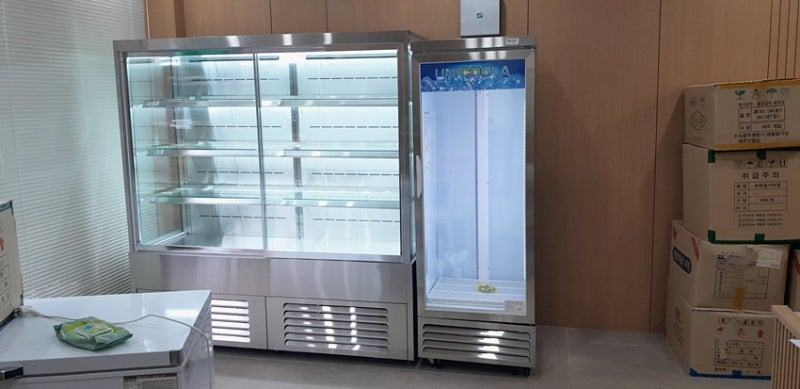
제과쇼케이스카페쇼케이스 고르는법, 냉기 흐름·문·조명 순서로카페쇼케이스 고르는법을 냉기 흐름, 문 방향, 조명과 유리, 매장 운영 방식 네 가지로 정리했습니다. 케이크…읽기 -
 와인(음료)쇼케이스업소용음료수냉장고 진열, 라벨이 보이게 채우는 순서업소용음료수냉장고 진열은 많이 넣는 것보다 손님 눈에 라벨이 들어오게 하는 것이 먼저입니다. 칸 나누기, 눈…읽기
와인(음료)쇼케이스업소용음료수냉장고 진열, 라벨이 보이게 채우는 순서업소용음료수냉장고 진열은 많이 넣는 것보다 손님 눈에 라벨이 들어오게 하는 것이 먼저입니다. 칸 나누기, 눈…읽기 -
오픈쇼케이스오픈쇼케이스 창업 준비, 고르는 순서와 놓치기 쉬운 것오픈쇼케이스로 창업을 준비한다면 판매 상품, 매장 크기, 전기 사용, 마감 후 관리까지 순서대로 정해야 합니…읽기
-
정육쇼케이스정육쇼케이스 수명을 줄이는 습관과 늘리는 관리정육쇼케이스 수명은 콤프레셔를 얼마나 쉬게 해 주느냐에 달려 있습니다. 정육점 작업 환경에서 수명을 갉아먹는…읽기
-
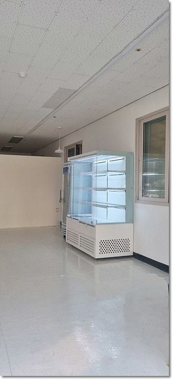
과일진열쇼케이스과일가게 냉장고, 보관용과 진열용을 나눠 생각하기과일가게 냉장고는 박스 재고를 보관하는 냉장고와 손님에게 보여 주는 과일쇼케이스를 나눠 계획해야 합니다. 둘…읽기 -
 반찬(진열)쇼케이스반찬가게 오픈 체크리스트, 반찬쇼케이스 설비 점검 순서반찬가게 오픈 체크리스트 중 반찬쇼케이스와 냉장 설비 부분만 모았습니다. 설치 환경, 전원, 용기와 진열량,…읽기
반찬(진열)쇼케이스반찬가게 오픈 체크리스트, 반찬쇼케이스 설비 점검 순서반찬가게 오픈 체크리스트 중 반찬쇼케이스와 냉장 설비 부분만 모았습니다. 설치 환경, 전원, 용기와 진열량,…읽기 -
 꽃냉장고꽃냉장고 사이즈, 좁은 꽃집에서 높이부터 정하는 이유꽃냉장고 사이즈는 가로 폭보다 꽃 길이에 맞춘 내부 높이, 물통이 들어가는 깊이, 작업대와의 거리에서 먼저 …읽기
꽃냉장고꽃냉장고 사이즈, 좁은 꽃집에서 높이부터 정하는 이유꽃냉장고 사이즈는 가로 폭보다 꽃 길이에 맞춘 내부 높이, 물통이 들어가는 깊이, 작업대와의 거리에서 먼저 …읽기 -
쇼케이스 이용 및 관리간냉식쇼케이스 직냉식쇼케이스 차이, 업종별 고르는 기준간냉식쇼케이스와 직냉식쇼케이스는 냉기를 전하는 방식이 달라 성에, 온도 균일, 상품 건조, 수리 편의에서 차…읽기
-
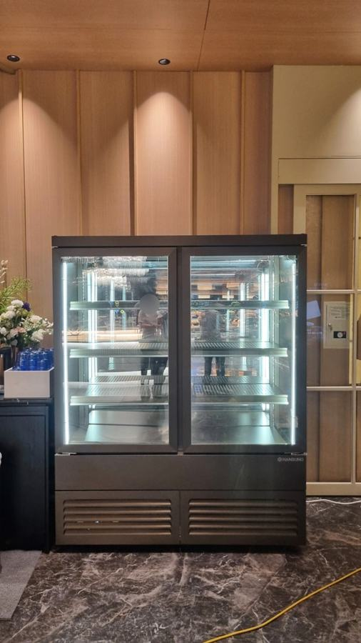
한성제품냉장쇼케이스 온도가 칸마다 다를 때 확인할 곳냉장쇼케이스 온도가 위아래, 앞뒤로 다르게 나온다면 설정값보다 냉기 순환 구조와 진열, 센서 위치, 유리 결…읽기 -
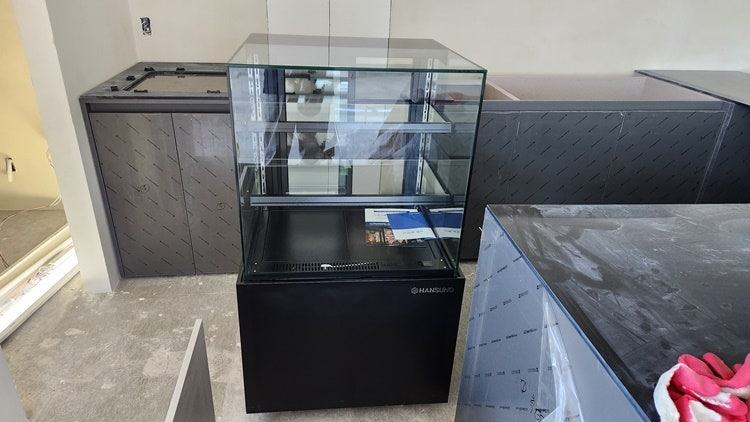
제과쇼케이스제과쇼케이스 관리, 유리·선반·기계실 청소 순서제과쇼케이스 관리는 손님이 보는 유리, 크림과 부스러기가 떨어지는 선반, 눈에 안 보이는 기계실을 나눠 챙기…읽기 -
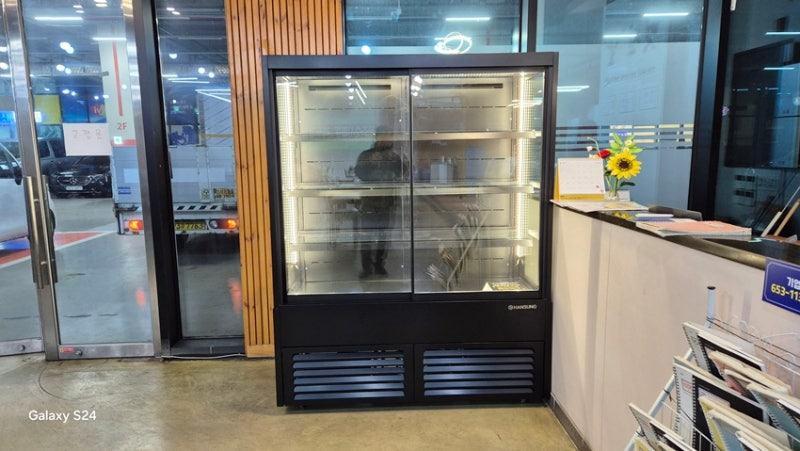
와인(음료)쇼케이스업소용음료수냉장고 냉동겸용, 한 대로 갈지 나눌지업소용음료수냉장고를 냉동겸용으로 할지, 냉장과 냉동을 따로 둘지는 냉동 상품 비중과 문 여닫는 빈도, 매장 …읽기 -
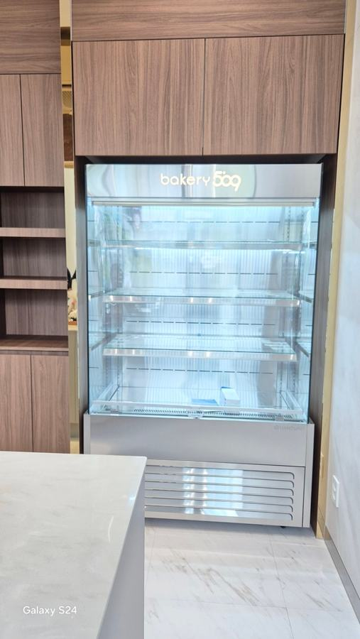
오픈쇼케이스오픈쇼케이스 배송, 반입 경로부터 재 두셔야 합니다오픈쇼케이스 배송은 제품 크기보다 매장까지 들어오는 길이 먼저입니다. 출입문·계단·설치 자리 확인법과 제작·…읽기 -
 정육쇼케이스정육쇼케이스 렌탈, 계약서에 사인하기 전 볼 조건정육쇼케이스 렌탈은 초기 부담이 적은 대신 고장 대응, 규격, 계약 종료 후 처리가 계약서에 어떻게 적혀 있…읽기
정육쇼케이스정육쇼케이스 렌탈, 계약서에 사인하기 전 볼 조건정육쇼케이스 렌탈은 초기 부담이 적은 대신 고장 대응, 규격, 계약 종료 후 처리가 계약서에 어떻게 적혀 있…읽기 -
과일진열쇼케이스과일쇼케이스 온도가 맞는데도 과일이 무를 때 볼 곳과일쇼케이스 온도는 숫자 하나로 정해지지 않습니다. 과일 종류, 습도, 냉기 흐름, 진열 위치에 따라 같은 …읽기
-
 반찬(진열)쇼케이스반찬쇼케이스 고장, 증상별로 먼저 볼 곳과 접수 요령반찬쇼케이스 고장은 전원, 냉기, 성에·물 고임, 소음처럼 증상마다 먼저 확인할 곳이 다릅니다. 사장님이 직…읽기
반찬(진열)쇼케이스반찬쇼케이스 고장, 증상별로 먼저 볼 곳과 접수 요령반찬쇼케이스 고장은 전원, 냉기, 성에·물 고임, 소음처럼 증상마다 먼저 확인할 곳이 다릅니다. 사장님이 직…읽기 -
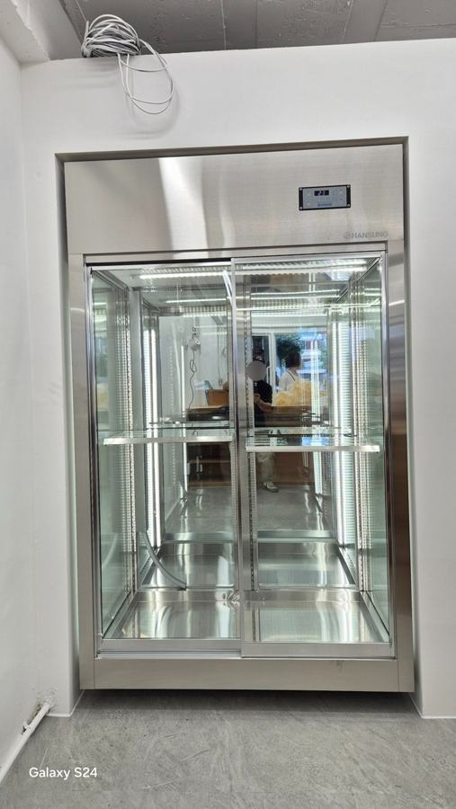
꽃냉장고꽃냉장고 고르는법, 온도보다 바람과 습도를 먼저 보세요꽃냉장고 고르는법의 핵심은 냉각 방식, 습도 유지, 내부 소재, 조명 색입니다. 음료 냉장고로 대신하면 안 …읽기 -
 쇼케이스 이용 및 관리냉장평대 다단쇼케이스 차이, 매장 폭과 상품으로 고르기냉장평대와 다단쇼케이스 차이는 손님이 상품을 내려다보느냐, 눈높이에서 마주하느냐에 있습니다. 진열량, 동선,…읽기
쇼케이스 이용 및 관리냉장평대 다단쇼케이스 차이, 매장 폭과 상품으로 고르기냉장평대와 다단쇼케이스 차이는 손님이 상품을 내려다보느냐, 눈높이에서 마주하느냐에 있습니다. 진열량, 동선,…읽기 -
한성제품편의점 쇼케이스 배치, 손님 동선을 따라 정하는 법편의점 쇼케이스 배치는 입구에서 안쪽 벽으로 손님을 끌어들이는 동선에서 출발합니다. 냉장 상품 위치, 통로 …읽기
-
 제과쇼케이스제과쇼케이스 업체 고를 때 상담에서 물어볼 다섯 가지제과쇼케이스 업체를 고를 때는 직접 제작하는지, 빵과 케이크에 맞는 습도·결로 대책이 있는지, 설치와 A/S…읽기
제과쇼케이스제과쇼케이스 업체 고를 때 상담에서 물어볼 다섯 가지제과쇼케이스 업체를 고를 때는 직접 제작하는지, 빵과 케이크에 맞는 습도·결로 대책이 있는지, 설치와 A/S…읽기 -
와인(음료)쇼케이스업소용음료수냉장고 도어, 여닫이·슬라이딩 고르는 기준업소용음료수냉장고 도어는 여닫이, 슬라이딩, 문 짝 수에 따라 통로 공간과 냉기 유지, 꺼내는 편의가 달라집…읽기
-
오픈쇼케이스오픈쇼케이스 보증, 기간보다 먼저 읽어야 할 조건오픈쇼케이스 보증은 기간 숫자보다 무엇이 포함되고 누가 수리하러 오는지가 중요합니다. 새 제품과 중고 제품의…읽기
-
정육쇼케이스정육쇼케이스 소음, 소리 종류별로 원인 찾는 법정육쇼케이스 소음은 웅웅거림, 덜컹거림, 딸깍 소리, 물 흐르는 소리처럼 종류마다 원인이 다릅니다. 사장님이…읽기
-
 과일진열쇼케이스과일가게 쇼케이스 배치, 상온 매대와 냉장칸 나누는 법과일가게 쇼케이스 배치는 상온 진열 과일과 냉장 보관 과일을 어디에 나눌지에서 시작합니다. 입구 매대, 냉장…읽기
과일진열쇼케이스과일가게 쇼케이스 배치, 상온 매대와 냉장칸 나누는 법과일가게 쇼케이스 배치는 상온 진열 과일과 냉장 보관 과일을 어디에 나눌지에서 시작합니다. 입구 매대, 냉장…읽기 -
반찬(진열)쇼케이스반찬가게 폐기 줄이는 법, 진열 쇼케이스에서 시작하세요반찬가게 폐기 줄이는 법은 만드는 양 조절과 함께 쇼케이스 온도 유지, 결로 관리, 진열 순서에서 시작합니다…읽기
-
 꽃냉장고꽃냉장고 업체 비교할 때 견적서 말고 볼 것꽃냉장고 업체를 고를 때는 직접 제작하는 곳인지, 생화 보관 구조를 설명할 수 있는지, 설치 자리에 맞춰 만…읽기
꽃냉장고꽃냉장고 업체 비교할 때 견적서 말고 볼 것꽃냉장고 업체를 고를 때는 직접 제작하는 곳인지, 생화 보관 구조를 설명할 수 있는지, 설치 자리에 맞춰 만…읽기 -
쇼케이스 이용 및 관리맞춤제작쇼케이스 기성품쇼케이스 차이, 언제 무엇이 맞나맞춤제작쇼케이스와 기성품쇼케이스 차이는 크기·디자인 자유도, 납기, 진열 상품 맞춤 정도, 사후관리 주체에서…읽기
-
한성제품미니쇼케이스 전기세, 작은 장비일수록 자리와 습관이 좌우합니다미니쇼케이스 전기세는 크기보다 설치 자리, 뒷면 통풍, 채우는 양, 문 여닫는 습관에서 차이가 납니다. 카운…읽기
-
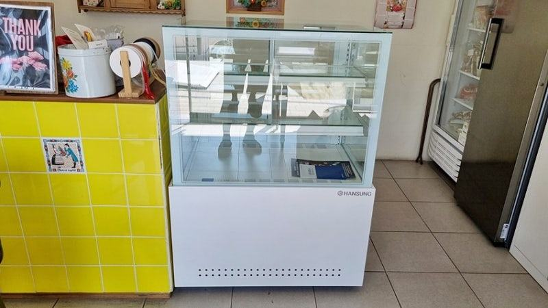
제과쇼케이스제과쇼케이스 조명, 케이크 색과 크림을 지키는 선택제과쇼케이스 조명은 색온도에 따라 빵과 케이크가 보이는 색이 달라지고, 발열에 따라 크림 상태까지 영향을 받…읽기 -
와인(음료)쇼케이스업소용음료수냉장고 콤프레셔, 오래 쓰려면 알아야 할 것업소용음료수냉장고 콤프레셔는 냉장고의 심장이라 수명과 전기 사용, 소음을 함께 좌우합니다. 콤프레셔에 무리를…읽기
-
 오픈쇼케이스오픈쇼케이스 가격이 견적마다 다른 이유와 비교 기준오픈쇼케이스 가격은 크기뿐 아니라 단 수, 에어커튼 구조, 나이트커버, 조명, 기계실 방식, 설치 조건에 따…읽기
오픈쇼케이스오픈쇼케이스 가격이 견적마다 다른 이유와 비교 기준오픈쇼케이스 가격은 크기뿐 아니라 단 수, 에어커튼 구조, 나이트커버, 조명, 기계실 방식, 설치 조건에 따…읽기 -
 정육쇼케이스정육쇼케이스 디자인, 고기 색과 매장 분위기를 함께 잡는 법정육쇼케이스 디자인은 외관 색보다 고기가 어떻게 보이느냐에서 출발해야 합니다. 조명 색, 앞유리 형태, 단 …읽기
정육쇼케이스정육쇼케이스 디자인, 고기 색과 매장 분위기를 함께 잡는 법정육쇼케이스 디자인은 외관 색보다 고기가 어떻게 보이느냐에서 출발해야 합니다. 조명 색, 앞유리 형태, 단 …읽기 -
과일진열쇼케이스과일쇼케이스 전기세, 문 열어 두는 과일가게에서 아끼는 법과일쇼케이스 전기세는 출입문을 열어 두는 영업 방식, 햇빛, 박스째 넣는 습관, 응축기 먼지에서 많이 늘어납…읽기
-
반찬(진열)쇼케이스반찬쇼케이스 AS, 살 때 확인해야 고장 난 날 덜 잃습니다반찬쇼케이스 AS는 고장 난 뒤가 아니라 구매할 때 정해집니다. 보증을 누가 서는지, 수리 대응이 얼마나 빠…읽기
-
 꽃냉장고꽃냉장고 조명, 꽃 색을 그대로 보여 주는 LED 고르기꽃냉장고 조명은 꽃 본래의 색을 보여 주는 색온도, 꽃에 열을 주지 않는 LED, 단마다 고른 밝기, 프레임…읽기
꽃냉장고꽃냉장고 조명, 꽃 색을 그대로 보여 주는 LED 고르기꽃냉장고 조명은 꽃 본래의 색을 보여 주는 색온도, 꽃에 열을 주지 않는 LED, 단마다 고른 밝기, 프레임…읽기 -
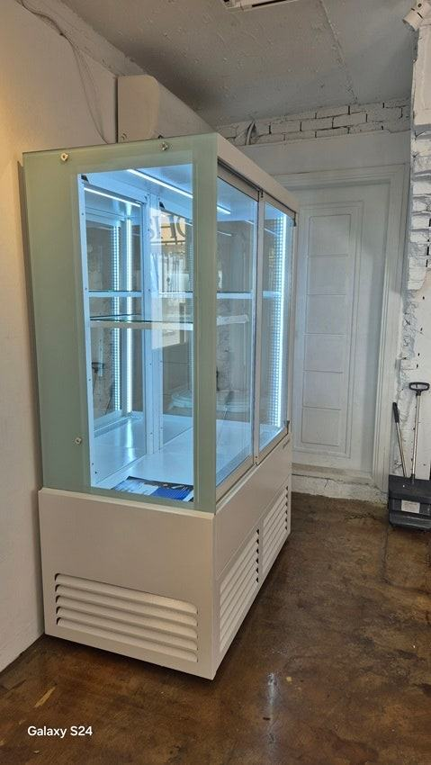
쇼케이스 이용 및 관리유리쇼케이스 스텐쇼케이스 차이, 보여 줄 것인가 버틸 것인가유리쇼케이스와 스텐쇼케이스 차이는 진열 효과, 단열과 결로, 내구성·청소, 어울리는 업종에서 갈립니다. 매장…읽기 -
 한성제품편의점 오픈 체크리스트, 냉장 설비부터 점검하세요편의점 오픈 체크리스트에서 냉장 설비는 일정이 가장 길고 되돌리기 어려운 항목입니다. 실측, 전기 용량, 반…읽기
한성제품편의점 오픈 체크리스트, 냉장 설비부터 점검하세요편의점 오픈 체크리스트에서 냉장 설비는 일정이 가장 길고 되돌리기 어려운 항목입니다. 실측, 전기 용량, 반…읽기 -
한성제품냉장쇼케이스 가격, 견적서에서 금액을 가르는 항목 정리냉장쇼케이스 가격은 크기보다 냉각 방식, 문 구조, 유리 사양, 옵션 구성에서 크게 갈립니다. 견적서 읽는 …읽기
-
제과쇼케이스제과쇼케이스 전기세, 빵집에서 새는 냉기 잡는 운영 습관제과쇼케이스 전기세는 오븐 열기, 문 여닫는 방식, 매장에 맞지 않는 크기에서 주로 늘어납니다. 베이커리 사…읽기
-
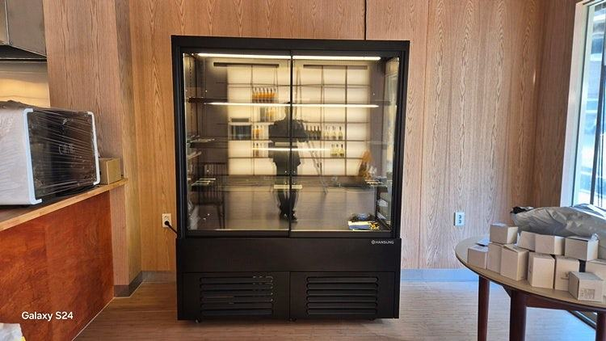
와인(음료)쇼케이스업소용음료수냉장고 견적, 요청 전에 정리해 둘 정보 6가지업소용음료수냉장고 견적은 설치 자리 치수, 진열 음료 종류와 수량, 문 방식, 냉각 방식을 함께 보내야 정확…읽기 -
오픈쇼케이스오픈쇼케이스 디자인, 색·마감·조명으로 매장 분위기 맞추기오픈쇼케이스 디자인은 프레임 색과 마감, 조명 색, 선반 구성, 매립 여부가 매장 인테리어와 맞아야 살아납니…읽기
-
정육쇼케이스정육쇼케이스 관리, 오래 쓰는 매장의 청소·점검 습관정육쇼케이스 관리는 핏물과 기름 청소, 성에 확인, 콘덴서 먼지 제거, 문 패킹 점검을 꾸준히 하는 것이 기…읽기
-
과일진열쇼케이스과일쇼케이스 가격, 견적이 달라지는 다섯 가지 지점과일쇼케이스 가격은 크기보다 습도 관리 구조, 진열 단 구성, 문 방식, 조명, 운송·설치 조건에서 갈립니다…읽기
-
 반찬(진열)쇼케이스반찬가게 창업비용, 반찬쇼케이스에서 줄이면 안 되는 부분반찬가게 창업비용을 줄일 때 반찬쇼케이스는 온도 유지, 김서림 없는 유리, 용기 크기에 맞는 단차만큼은 지켜…읽기
반찬(진열)쇼케이스반찬가게 창업비용, 반찬쇼케이스에서 줄이면 안 되는 부분반찬가게 창업비용을 줄일 때 반찬쇼케이스는 온도 유지, 김서림 없는 유리, 용기 크기에 맞는 단차만큼은 지켜…읽기 -
꽃냉장고꽃냉장고 가격, 견적서에서 꼭 나눠 볼 항목들꽃냉장고 가격은 높이와 유리 면적, 습도를 지키는 냉각 구조, 문 방식, 물 빠짐 처리에서 달라집니다. 꽃집…읽기
-
쇼케이스 이용 및 관리꽃냉장고 음료수냉장고 차이, 바람과 습도에서 갈립니다꽃냉장고와 음료수냉장고는 겉모습은 비슷해도 바람 방향과 내부 습도가 다릅니다. 꽃집에서 음료수 냉장고를 쓰면…읽기
-
한성제품편의점 창업비용, 냉장 집기 예산을 짜는 순서개인 편의점 창업비용에서 냉장 쇼케이스는 매장 크기, 음료·유제품·도시락 구역 구분, 온장고 여부, A/S …읽기
-
제과쇼케이스베이커리 오픈 체크리스트, 제과쇼케이스 편베이커리 오픈 전 제과쇼케이스에서 확인할 것은 품목별 구역 구분, 도어 방향, 유리 사양, 냉기 흐름, 마감…읽기
-
와인(음료)쇼케이스업소용음료수냉장고 설치 전, 매장에서 미리 볼 다섯 가지업소용음료수냉장고 설치는 반입 경로, 바닥 수평, 전기 용량, 열 빠질 공간, 배수 위치를 먼저 확인해야 탈…읽기
-
오픈쇼케이스오픈쇼케이스 배치, 벽면·통로·계산대 중 어디가 맞을까오픈쇼케이스 배치는 손님 동선만큼 에어컨 바람, 출입문 외풍, 햇빛 같은 냉기 손실 요인을 함께 봐야 합니다…읽기
-
정육쇼케이스정육쇼케이스 업체 고를 때 상담에서 확인할 것정육쇼케이스 업체는 매장 진단을 하는지, 직접 제작하는지, 고기 진열에 맞는 냉각·조명·유리 사양을 설명할 …읽기
-
과일진열쇼케이스과일가게 창업비용, 과일쇼케이스 예산은 이렇게 나누세요과일가게 창업비용에서 냉장 설비는 상온 진열과 냉장 진열을 나누고, 습도와 공기 흐름을 지키는 과일쇼케이스에…읽기
-
반찬(진열)쇼케이스반찬쇼케이스 맞춤제작, 실측부터 설치까지 진행 순서반찬쇼케이스 맞춤제작은 실측과 반찬 용기 확인, 디자인 상담, 도면 확정, 제작, 설치 순서로 진행됩니다. …읽기
-
꽃냉장고꽃냉장고 맞춤제작, 매장 벽에 맞춰 설계하는 순서꽃냉장고 맞춤제작은 매장 폭과 버킷 수, 꽃 종류별 온도대, 문 방식, 청소·배수 접근성을 먼저 정해야 합니…읽기
-
쇼케이스 이용 및 관리오픈쇼케이스 도어형쇼케이스 차이, 판매 방식으로 고르세요오픈쇼케이스와 도어형쇼케이스는 손님이 상품을 집는 방식, 냉기 유지, 야간 관리, 청소 동선에서 차이가 납니…읽기
-
한성제품냉장쇼케이스 중고, 유리·쿨러·선반부터 확인하세요냉장쇼케이스 중고는 일반 냉장고와 달리 결로 방지 유리 열선, 뒷벽 쿨러 순환, 타공 선반, 온도 센서 상태…읽기
-
 제과쇼케이스제과쇼케이스 고장, 증상별로 먼저 확인할 것제과쇼케이스 고장은 온도가 안 내려감, 유리 김서림, 성에, 소음, 조명 꺼짐, 바닥 물 고임처럼 증상별로 …읽기
제과쇼케이스제과쇼케이스 고장, 증상별로 먼저 확인할 것제과쇼케이스 고장은 온도가 안 내려감, 유리 김서림, 성에, 소음, 조명 꺼짐, 바닥 물 고임처럼 증상별로 …읽기 -
와인(음료)쇼케이스업소용음료수냉장고 수명, 오래 쓰는 매장의 관리 습관업소용음료수냉장고 수명은 정해진 햇수보다 콤프레셔 먼지, 채우는 양, 성에 처리, 상부 통풍 같은 매일의 관…읽기
-
오픈쇼케이스오픈쇼케이스 진열, 냉기선과 눈높이를 함께 지키는 법오픈쇼케이스 진열은 손님 눈높이에 잘 팔리는 상품을 두는 것과 함께, 앞쪽 진열선을 넘지 않아 에어커튼을 지…읽기
-
정육쇼케이스정육쇼케이스 조명, 고기 색을 정직하게 살리는 선택법정육쇼케이스 조명은 고기 색을 살리는 색감, 고기 표면을 덜 마르게 하는 발열, 눈부심 없는 위치, 교체 쉬…읽기
-
과일진열쇼케이스과일쇼케이스 중고, 습도와 냉기 흐름부터 확인하세요과일쇼케이스 중고는 겉모양보다 습도 유지, 칸별 냉기 편차, 콤프레셔와 배관, 위생 상태를 먼저 봐야 합니다…읽기
-
반찬(진열)쇼케이스반찬가게 인테리어, 쇼케이스 자리부터 정해야 하는 이유반찬가게 인테리어는 반찬쇼케이스 위치와 크기를 먼저 정해야 전기·배수·바닥 공사와 벽 색, 조명 톤이 어긋나…읽기
-
꽃냉장고꽃냉장고 전기세, 설정 온도와 기계실 관리에서 갈립니다꽃냉장고 전기세는 필요 이상으로 낮춘 설정 온도, 기계실 먼지, 잦은 문 개방, 햇빛 드는 자리에서 늘어납니…읽기
-
쇼케이스 이용 및 관리정육쇼케이스 일반냉장고 차이, 보관과 진열은 다른 일입니다정육쇼케이스와 일반 업소용 냉장고는 냉기 순환, 유리와 결로 관리, 조명, 작업 동선이 다릅니다. 손님 앞에…읽기
-
한성제품편의점 창업 준비물, 냉장·냉동 집기 체크리스트편의점 창업 준비물 중 냉장·냉동 집기는 음료 도어형 냉장고, 세미다단 쇼케이스, 아이스크림 냉동고, 온장고…읽기
-
제과쇼케이스베이커리 폐기 줄이는 법, 진열대에서 먼저 손볼 4가지베이커리 폐기 줄이는 법은 굽는 양보다 진열 방식에서 먼저 찾을 수 있습니다. 품목별 구역, 냉기 방식, 채…읽기
-
와인(음료)쇼케이스업소용음료수냉장고 렌탈과 구매, 매장별로 갈리는 기준업소용음료수냉장고 렌탈은 운영 기간이 짧거나 규격이 표준인 매장에 맞고, 오래 쓸 매장이나 자리가 특이한 매…읽기
-
오픈쇼케이스오픈쇼케이스 냉동겸용, 한 대로 합칠지 나눌지 정하는 법오픈쇼케이스 냉동겸용은 냉동 상품 비중과 매장 폭에 따라 답이 갈립니다. 한 대에 합칠 때 생기는 문제와 냉…읽기
-
정육쇼케이스정육쇼케이스 결로, 유리에 물방울이 맺히는 이유와 줄이는 법정육쇼케이스 결로는 매장 공기와 유리 표면의 온도 차이에서 생깁니다. 결로가 잘 생기는 자리와 시간대, 매장…읽기
-
과일진열쇼케이스과일가게 창업 준비물, 냉장 설비부터 순서대로 챙기기과일가게 창업 준비물 중 가장 늦게 바꾸기 어려운 것이 냉장 설비입니다. 상온 진열대, 과일쇼케이스, 저장 …읽기
-
반찬(진열)쇼케이스반찬쇼케이스 추천, 매장 폭과 판매 방식으로 고르는 기준반찬쇼케이스 추천은 모델명보다 매장 폭, 손님이 직접 담는지 직원이 꺼내 주는지, 반찬 용기 크기에서 출발해…읽기
-
꽃냉장고꽃집 오픈 체크리스트, 공사 전부터 오픈 전날까지 설비 편꽃집 오픈 체크리스트를 공사 전, 꽃냉장고 선택, 동선 배치, 오픈 직전 시운전 단계로 나눠 정리했습니다. …읽기
-
쇼케이스 이용 및 관리제과쇼케이스 카페쇼케이스 차이, 진열 품목과 놓는 자리로 갈립니다제과쇼케이스와 카페쇼케이스 차이는 이름보다 무엇을 얼마나 진열하고, 매장 어디에 놓는지에서 생깁니다. 크기·…읽기
-
한성제품냉장쇼케이스 맞춤제작, 상담부터 설치까지 사장님이 정할 것냉장쇼케이스 맞춤제작은 매장 폭과 진열 상품, 문 방향을 정하는 것에서 시작합니다. 상담·실측·디자인·제작·…읽기
-
제과쇼케이스제과쇼케이스 AS, 접수 전 점검과 수리·교체 판단 기준제과쇼케이스 AS를 부르기 전 매장에서 확인할 것, 접수할 때 알려야 할 정보, 수리와 교체를 가르는 기준을…읽기
-
와인(음료)쇼케이스업소용음료수냉장고 소음, 정상 소리와 점검이 필요한 소리 구분법업소용음료수냉장고 소음은 대부분 수평, 벽과의 간격, 응축기 먼지에서 시작됩니다. 정상 작동음과 고장 신호를…읽기
-
오픈쇼케이스오픈쇼케이스 도어, 문을 달지 말지와 문 방식 고르는 법오픈쇼케이스 도어는 집기 편한 장점을 얼마나 지키면서 냉기를 막을지의 문제입니다. 완전 오픈, 야간 차단막,…읽기
-
정육쇼케이스정육쇼케이스 간냉식 직냉식, 진열용과 보관용으로 나눠 고르기정육쇼케이스 간냉식 직냉식 선택은 고기를 보여 주는 진열인지, 덩어리째 두는 보관인지에 따라 갈립니다. 두 …읽기
-
과일진열쇼케이스과일쇼케이스 맞춤제작, 과일 매장이라서 따로 정할 것들과일쇼케이스 맞춤제작은 크기보다 과일 크기별 단 깊이, 경사 진열, 습도, 조명 색을 매장에 맞추는 일입니다…읽기
-
 반찬(진열)쇼케이스반찬가게 냉장고, 진열·작업·김치용으로 나눠 준비하기반찬가게 냉장고는 손님에게 보여 주는 진열 쇼케이스, 만든 반찬을 쌓아 두는 작업 냉장고, 김치처럼 저온이 …읽기
반찬(진열)쇼케이스반찬가게 냉장고, 진열·작업·김치용으로 나눠 준비하기반찬가게 냉장고는 손님에게 보여 주는 진열 쇼케이스, 만든 반찬을 쌓아 두는 작업 냉장고, 김치처럼 저온이 …읽기 -
꽃냉장고꽃집 폐기 줄이는 법, 꽃냉장고 안에서 시작하는 관리 순서꽃집 폐기 줄이는 법을 입고 직후 손질, 꽃냉장고 온도 구역, 선반 높이, 결로, 물통 관리 순서로 정리했습…읽기
-
쇼케이스 이용 및 관리사선형쇼케이스 직각형쇼케이스 차이, 손님 시선과 놓는 자리로 고르기사선형쇼케이스와 직각형쇼케이스 차이는 전면 유리 각도에서 시작해 보이는 범위, 조명 반사, 측면 노출, 배치…읽기
-
한성제품편의점 인테리어, 냉장 쇼케이스 벽부터 잡아야 하는 이유편의점 인테리어는 벽지나 간판보다 냉장 쇼케이스가 들어갈 벽과 동선을 먼저 정해야 공사가 두 번 되지 않습니…읽기
-
제과쇼케이스베이커리 전기요금, 냉장 장비에서 새는 전기부터 잡는 법베이커리 전기요금은 오븐만이 아니라 하루 종일 켜져 있는 제과쇼케이스와 냉장·냉동 장비에서 크게 갈립니다. …읽기
-
와인(음료)쇼케이스업소용음료수냉장고 디자인, 색·프레임·조명으로 매장에 녹이는 법업소용음료수냉장고 디자인은 외관 색과 소재, 프레임 두께, 조명 색, 손잡이, 로고 각인까지 고를 수 있습니…읽기
-
오픈쇼케이스오픈쇼케이스 콤프레셔, 문 없는 냉장고일수록 더 따져야 하는 이유오픈쇼케이스 콤프레셔는 문이 없어 쉬는 시간이 짧기 때문에 용량, 열 배출, 관리 상태가 수명과 전기 사용을…읽기
-
정육쇼케이스정육쇼케이스 견적, 정확하게 받고 공정하게 비교하는 법정육쇼케이스 견적은 형태, 크기, 냉각 방식, 조명과 옵션, 설치 조건에 따라 달라집니다. 견적 요청 때 보…읽기
매장 실측과 도면은 무료 상담으로 먼저 받아 보세요.
031-986-2458